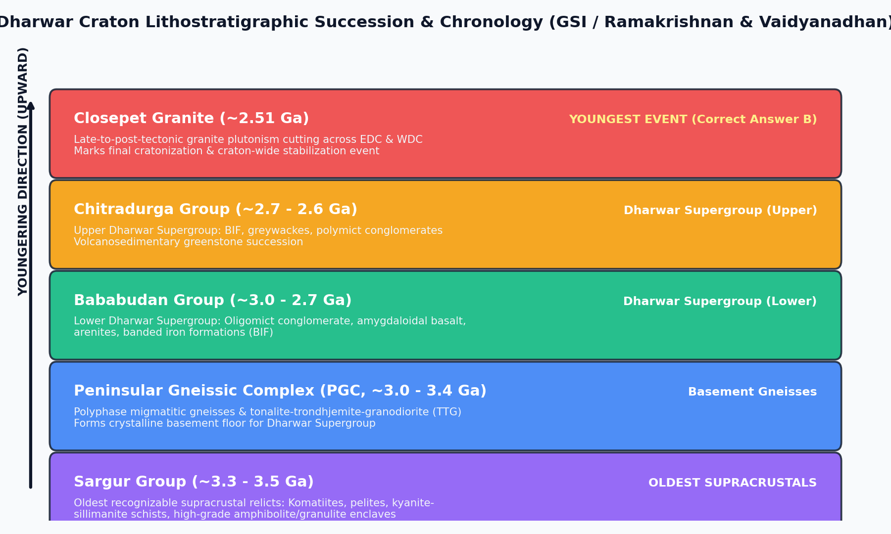
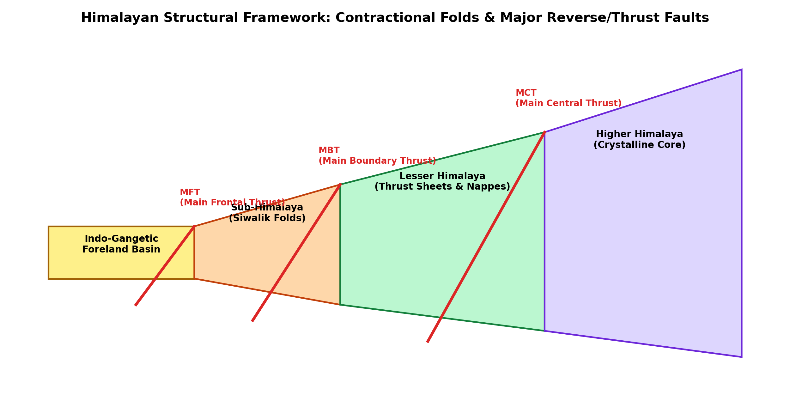
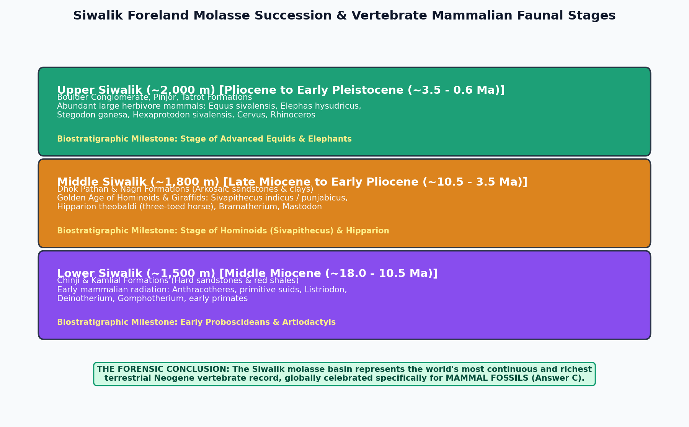

He Indian Stratigraphy
8.1 Introduction

“Stratigraplty” is the science of description,correlation and classification of strata in sedimentary rocks. [t also includes the interpretation of the depositional environments of the strata.
Facies, A set of lithological and palaeontological charactersties of a sedimentary rock which indicate its particular environment of deposition, are called “facies”. A lateral variation in lithology and fossil assemblage in a formation which result from change in the environment of deposition, is called “facies variation”. For example, a formation may be composed of shale in one locality and limestone in another or fresh water fossils at one place and marine fossils at another. For a metamorphic rock the term facies tneans the particular range of pressure and temperature under which the rock crystallized. 4 Index Fossils. Those fossi forms which have short time ranges of their existence and wide geographical distribution, are called “index fossils”, A
Law of Superposition.In a series of undisturbed beds, a bed that overlies another bed is always the younger. The youngest bed will be at the top of the sequence. 4 Fossil Content. William Smith in 1799 noticed that each of the sedimentary beds contain a particular set of fossils by which it can. be identified. Because the lower forms of life existed long before the higher organism appeared, it is possible to assign relative ages to the strata conLithological Character. A sedimentary bed may be identified by its: distinct lithological character. But as similar rock beds are known to occur in formations of widely different geological ages, the lithology is nat much use for determining relative ages. 8.3.PRINCIPLES OF CORRELATION The rock formations of widely separated areas are correlated with the help of the following criteria. 1 Lithology. Correlation by means of lithology is not reliable because a rock bed when taced laterally may change its character. Further simil rock beds are known to occur in formations of widely different geological ages. 4 q Fossil Content. Fossiliferous rocks are characterized by the presence of distinct and definite set of fossils in them. However, just as the beds” show lateral vAriation in the lithology,they may also show lateral variation in the fossil assemblage. Hence only index fossils are used for correlation purposes.
Unconformities.The unconformities are of great significance in classifying and correlating rock formations. The unconformities represent breaks in depositional sequence hence they are significant in the interpretation of the geological history. For example, an angular unconformity is a surface of erosion that separates two sels of beds whose bedding plunes are not parallel.lt suggests that first the lower set of beds was formed in the horizonise disposition. This set was deformed and then eroded to a more or less” perophse! before the upper set was deposited horizontally upon it. older rocks may show higher pared to the younger rocks. q «, tBnevus Intrusion. The igneous history of a perti be identical to another regi y particular region may be Watieas fegion. In such cases rocks can be correlated. determined senile The age of intrusive igneous bodies may be. done, metric methods and then the correlation may be 8.4, FOSSILS “Fossils” are remains ot impressions of which have been preserved within the sedimentary rocks finals and plants
8.4.1 Conditions of Preservation
All the animals and plants are not Preserved as to: important conditions which favour the preservation of Tea 0h pa session of hard parts, and (ii) immediate burial.
Possession of Hard Parts.Afer the death of the organisms, the soft parts are generally easily decomposed, Therefore animals like jelly fish and insects which are totally composed of sofl parts, are not ordinarily preserved as fossils. The animals which passess hard skeleton have a better chance of being converted into fossils.
Immediate Burial.If the animals and plants are not buried quickly aftér their death, they are likely to be destroyed by chemical decay and other agencies of erosion.
8.4.2 Forms of Fossils
The fossils are preserved in rocks in a number of different forms which are as follows, Entire Organism Preserved. The whole body of the organism includeing its soft parts, may be preserved. For example, the bodies of mammoth elephants of pleistocene age are found preserved in the ice in northern Siberia. These types of fossils are, however, extremely rare.
Skeleton of Organism Preserved.In rocks of Tertiary age, the bony skeletons of animals having original composition and structure are found.
Petrifaction of Hard Parts.Mineral matter like silica, calcium carbonate and iron sulfide may replace the remains of organism particle by Particle thereby preserving the structure faithfully. An example of this type 1 Of fossil is the silicified wood.
Molds.After burial the hard parts of the organisms may be totally dissolved and removed in solution. As result hollows having the shape of the outside of the body are left within the rock beds. Such hollows are called “maids”.
Casts.Molds may be filled with mineral matter producing natural “casts”.’A cast shows all the external markings of the body of organism but not its internal structure. 4 Carbonization. When plants Uecompose slowly, their organic tissues are transformed into carbon. Such carbonized remains commonly preserve the structure of the original material. Seams of coal are the best.examples of carbonized remains of plants. 244 PRINCIPLES OF ENGINEERING GEOLOQY.. Imprints. Plants and animals which do not have hard parts may be preserved as imprints in soft sediments such as shales. Distinct impressions of plant Icaves are often found preserved in the shales above coal seams,
8.4.3 Uses of Fossils ;
J. The fossils are commonly used for correlating the strata and determining their relative ages. &;, Fossils indicate whether the rock is a fresh water deposit or a marine deposit. si 3. Fossils give information about the climate of the times in which they lived. 4, The fossils have helped in understanding the evolution of plants and animals.
8.5 Geological Time Scale T
he time span of earth's history is about 3000 million ycars. [tis roughly represented by the column of sedimentary rocks now present on the earth. In this record the time clasped during the formation of unconformities is missing. The unconformities are however, important because they subdivide the geological time into smaller units. On this basis a standard Geological Time Seale (Table 8.1) bas been prepared which is used universally for the correlation of rock formations. q Fras. The major units of the geological time are called “eras”. In the geological time scale, there are four eras Mesozoic, and (ir) Cenozoic. Periods. Each era has been subdivided into smaller time unils called “periods”. The stratigraphic breaks which subdivide eras are relatively of lesser significance. For example, in the Paleozoic era, there are six periods: wa Cambrian, (ii) Ordovician, (iii) Silurian, (iv) Devonian, (v) Car- coniferous, and (vi) Permian. A succession of rocks deposited during Period constitutes a “system”. ie.
teeny The periods are further divided into smaller parts called onan ia fork units corresponding to epochs are called “series”. Fag 3 () Upper Triassic. 4 ‘age. A part of the series is called “stage”. It a pi is stage”. It is cl 3 ‘typical assemblage of fossils, fage". It is characterized by & 4 Zone. The basic x on the basis of, unil of a stage is called “zone”. It is recognised mainly DR Most characteristic fossil form. 4 ie basis of pal a to 10 rouge +) arceemto}, the Precambrian era has been divided and (if) Proterozoic, Table 8.1. Subdivisions of Geological Time Scale Age Million Years Period Quaternary asl Paleocene 2%0 4 ea.
. Carboniferous Devonian 2500-| PRECAMBRIAN The rock formations belonging to the “Archaeozoic group” are generally unfossiliferous whereas those belonging to the “Proterozoic group” show traces of the most primitive life. The rocks of the Palaeozoic, Mesozoic, and Cenozoic cras contain abundant remains of past life (Table 8.2).
8.6 Lithostratigraphic Classification
In regions having different kinds of geological history, the boundaries of the Geological Time Scale do not coincide with the actual stratigraphic: boundaries. In many areas, though the major stratigraphic divisions are identified, the demarcation of smaller divisions, such as series and stages become very difficult. In case of unfossiliferous strata, it is not possible to identify the divisions corresponding to those of the standard time scale. In order 1o avoid these difficulties the “Lithostratigraphic classification” has 246 PRINCIPLES OF ENGINEERING GEOLO@Y been devised. In this classification the rock formations are divided chiefly on the basis of lithological criteria.
Table 8.2. Geological Time Scale Recent Man, Modem plants. and animals, Quaternary (pecs Many manuals die. Pliocene Mammals, Birds, Mollusca and Flowering Miocene plants.
Tertiary Oligocene Eocene Paleocene (Cretaceous Dinosaurs, Flowering plants. Mesozoic Jurassic Ammonites, Dinosaurs. Triassic Ammonites, Reptiles. Amphibians. 4 Permian Reptiles, Nonflowering plans.
Carboniferous Amphibians.Non-flowering plants. Devonian Corals, Brachiopods, Early land plants. Silurian Freshwater fishes. Graptolites.
Cambrian Trilobites."Group. The major divisions of rock formations are called “Groups”. Each Group includes a thick succession of rocks which extends over a large area. The bigger unconformities separate one Group from another. A “Supergroup™ is formed when two or more Groups join together. q Formation. It is the basic unit used for naming the rocks in stratigraphy. It may be defined as a set of rocks which have some distinctive feature of lithology and are large enough to be mapped.
Bed.A bed is the smallest lithological unit. It may be defined as a single sedimentary rock unit which has a distinct set of mineralogical or fossil characteristics which help to distinguish it from beds above and below. 8.7. STRATIGRAPHIC UNITS OF INDIA ne broad stratigraphic units of India together 8.3. More than half logical Time Scale has been shown in Table rocks, the rest is abate peal India is covered with the Archaean Decoan Traps. In the Extra- Penne idapahs, Vindhyans, Gondwanas, and rocks ranging in age from the Cambri ta. mainly the marine sedimentary man to Eocene are exposed. INDIAN STRATIGRAPHY “ar ‘Table 8.3. Major Stratigraphic Units of India tm Periods Stratigraphic Units of India Recent Recent alluvium Quaternary Pleistocene Karewas of Kashmir, Older alluvium.
wires are roy Cretaceous Cretaceous of Trichinopaty, Deccan, traps Mesozoic (ace a Spiti shales. Lilang Group. Kioto limestone Permian pair Carboniferous Palaeozoic Devonian Silurian Missing in Peninsular India and preseat Ordovician in Himalayan regina.
Cambrian Proterozoic Cuddapah and Vindhyan Supergroups. Precambrian Archaeozoic Archaean, Dharwar and Aravali Groups.
8.8 Physiographic Divisions of India
India can be divided into three main divisions which differ from one another in physiography, structure and stratigraphy (Fig. 8.2.). These divisions are as follows.
2. Indo-Gangetic Plain.
3. Extra-Peninsular India.
8.8.1 Peninsular India
The Peninsular India lies to the south of the plains of Indus and Ganga river system.
Physiography.The Peninsular India has an extremely variable physiography. There are plateaus, peneplained ancient fold mountains, massifs, elongated graben like valleys, and coastal plains. The Western Ghats which forms a prominent physiographic feature exists at the western margin of the 248 nu PRINCIPLES OF ENGINEERING GEOLOGY INDO 1 “4 fr!
foe 4 i} OF BEKGAL ARABIAN a4 PRUHI RIDGE se0 4 4 MONGHYR RIDGE---3 “4
Peninsular India.Most of the rivers have attained the base level of erosion and its mountains are of relict type.
Structure.The Peninsular India is nearly a stable plateau which has remained unaffected by the orogenic movements of pos! Cambrian age. The normal and block faulting is however common.
The Narmada, Son and Damodar rivers flow in the graben-like valleys which tend in the E-W direction. The trend of the Mahanadi and Godavari valleys is in the NW-SE direction. The four distinct trends which have been recognised in the Peninsular India are 4 (i) NNW-SSE, trend of the southern parts of Western Ghats, (ii) NE-SW, a tend of Eastern Ghats, (iii) E-W, trend of Satpura in central India, and (iv) ' NE-SW, end of Aravallis in Rajasthan. 7 Stratigraphy. The Peninsular India is primarily f thei nins ia is primarily made up of rocks o| age. The Archaean rocks have been metamoreae fare pi In addition there exists the Deccan traps and a tho Goniwne ty ‘0 Eocene age. Post Cambrian sedimentary rocks the Peninsular iain ‘@ basin and occasionally along the coastal tracts of a 8.8.2, Indo-Gangetic Plain Plain is a deep crustal trough filled with Quaternary rinaiava “This Ate and structure is intimately related to the rise of Tits plain extends from Assam in the east, through Bengal, Bihar and U.P. up to Punjab in the west (Fig. 8.2).
Physiography.The Indo-Gangetic Plain is the very extensive alluvial plain which is sloping with a very small gradient towards the sea.
Structure.The Indo-Gangetic Plain is made up of the undisturbed layers of Quaternary sediments which have been deposited by the rivers of the Himalayan region.
The bottom of the Indo-Gangetic basin is asymmetrical. The northern margin of the Peninsular India dips gently northward. Hence the thickness of the Quaternary sediments gradually increases towards north and the maximum thickness is found at the northern extremity near the Outer Himalaya. The bottom of this trough is not stable and some changes are still taking place which give rise to earthquakes.
In the Indo-Gangetic Plain, three transverse “highs” have been recognised. These highs are Saharsa Ridge (Fig. 8.2). These highs divide the Indo-Gangetic Plain into four shelf areas (i) Punjab shelf, (if) west U.P. shelf, (iii) east UP. shelf. and (iv) Bengal shelf.
Stratigraphy.The Indo-Gangetic Plain ts chiefly made up of sands and clays of Pleistocene and Recent age. The basement of the Punjab shelf is made up of the Precambrian rocks, while that of the east and west UP. shelves contain Precambrian and Vindbyan rocks. The Bengal shelf is believed to contain rocks of Gondwana age and Rajmahal traps.
8.8.3 Extra Peninsular India
The Extra-Peninsular India lies at the northern extremity of the country. It is made up of the Himalayan mountain ranges in the north and Arakan— Yoma ranges in the east. The upper reaches of Indus and Brahmputra rivers mark its northern boundary.
Physiography.The Extra-Peninsular India is made up of the tectonic mountains and the frontal foredeep folded belt of Tertiary age. The Gronal foredeep belt is also called the “Siwalik Range” or “Outer Himalaya”. The Himalayan belt extends in the E—W direction and its total length is about 2400 Km. At ils western end this belt takes a sharp arcuate oe This is called the “syntaxial bend". A bend of similar nature is present at the eastern end of the Himalaya where the NE—SW tend changes into the NNE—SSW trend. 5 Ri prINCIPLES OF ENGINEERING GEOLOgy 250 ay Th rock formations of the Extra- Penjy Structure and Stratigeaphy complex folding, faulting overthrusting. The Extra-Peninsular to longitudinal ‘ti (i) Tethyan Himalayan zone. (i) Central Sopa, High d Himalaya (i) Lesser Himalayan zone, and () y ie (® Tethyan Himalayan Zone. This zone is at the northern extremity of the Extra-Peninsular India. Here the Himalayan mountains to an average altitude of about 6000 meters. This zone consists 9 the marine rock beds of Palaeozoic and Mesozoic ages. succession rests unconformably over the Precambrian basemen (ii) Central Zone of Higher Himalaya. In this zone the average heigh of the mountains is also about 6000 meters but they are chiefly made up of the Precambrian basement and the granitic plutons g Tertiary age.
(iii) Lesser Himalayan Zone.The average height of mountains in th zone is between 2000—3000 meters. Many antecedent rivers floy through this zone, These rivers originate in the Tethyan Himalayai zane and flow actoss the Higher Himalayan and Lesser Himalaya ranges by culling deep gorges. The rock formations of this ges bY deep Borg are relatively less metamorphosed. They are unfossiliferous an therefore their correlation can not be done. The structure of thes rocks is very complex. They arc affected by a series of thrust fault due to which the stratigraphic succession has been reversed 4 many places. The lower part of the unfossiliferous rockformati a is believed to be of Precambrian age. These are overlain by rock formations of Gondwana age. Above these are the rocks of 1 Wary age. 4 (iv) Foredeep Folded Belt. This zone lies at the southern margin the Extra-Peninsular India. Il is also called the “Siwalik Range’ y ‘The low lying hills of this belt are mainly male up of the s di ments of -Pliocene age. The southern is belt t e Ss unwary of this be!
marked by the “Main boundary faults”. 4
8.9 Archaean System 4
? eaters made up of very ancient rocks such as gneiss sedimentary rockfonnalion rocks form a basement on which all you rocks are a$ follows, mas rest. The general characters of the Archae R 1. They are unfossil a earth at the ti siliferous. It suggests that there was no life on time of formation of the Arch: a 2. They e aean rocks. Ar generally highly meta 3. They are contorted and subjected to re 4, They are intruded by Sees me oelllng: tion. igneous rocks of acid to ultrabasic composi‘As the structure and composition of plex, they are often called sr The Archaean gneisses are typically mi; a or “Basement complex” alternate bands of armphibolies nd ious.
8.9.1 Distribution
The Archaean rocks cover nearly two " Bihar and Oris, (i) Gujrat and Rajasthan, (i) Asan Pea, and) pis es uacrurk Abs Sarah
Central Himalayan region.Besides these areas, the Archaean rocks are believed to extend below the Deccun traps between Kamataka and Rajasthan, and below the alluvium of the Ganga river between Bihar and Assam. For convenience of study, the Archaean rocks of Peninsular India have been divided into five zones.
1. Archnean rocks of South India.
2. Archaean rocks of Eastern Ghat.3, Archaean rocks of M.P. and Maharashtra. 7 4, Archnean rocks of Bihar and Orissa.
5. Archaean rocks of Rajasthan.os PRINCIPLES OF ENGINEERING GEOLog, WAR SUPERGROUP 8.10, DHAR' re at India 7° described a8 the "Dhany, Supergroup" They are best develoPet deposited er The ‘sediments of the Dharwar supergroup were deposited over a basemen of the “Fundamental greissic compler’-
8.10.1 Lithology and Structure a
‘The chief rock types of the Dharwer supergroup are encisses a granites. They cover the major part of South India, Many elongated belt: schistose rocks are found enclosed within these rocks. The schistose roe have been folded isoclinally and exhibit a steep dip towards eust, ‘Ty regional strike of these rocks is NNW-SSE. In south Karnataka this ‘st becomes N-S and even NE-SW.
8.10.2 Classification a
In 1915, WE Smeeth studied the Dharwar rocks and regarded ther of igneous origin. On the basis of the difference in the chemical character he divided the Dharwar succession into two groups: (i) the toy “Hormblendic division”, and (i) the upper “Chlorisic division”. a In 1940, B.Ramaro found many sedimentary structures, such as cur bedding and ripple marks, in the Dharwar rocks. He proposed a eefol classification which is shown in Table 8.4.
‘Table 8.4. Succession of Dharwars a bee and Porphyry dykes a losepel granite a fale Charnockites a peninsular gneiss 4 [Champion gneiss q Quartzite, and Conglomerate t Granitic rocks with Middle Dharwars Banded-hematite-quartzite Crystalline Sericite-schist, 2 Bo tow Mi 4 hist (Metamorphosed basic lavas Base known. a scatman er be division comprises mainly rocks of igneous and tuff. These rocks ie be mafic lavas over which fie the rhyolite Guirasiobie a panies metamorphosed to hornblende-schist, Middle Dhacwurs. This divi au ie s ‘ision is mainly made up of rocks of Se The typical rocks are banded-hematite- quartzite, limestone, cI sid e-schist, micaccous-quartzite and conglomerate, Bosses of sealer (v) have been intruded in these rocks. The conglomerate contains pebbles derived from different rock types and the quartzites contain current bedding.
Upper Dinrwars.The rocks belonging 10 this group are of sedimentary origin. The chief rock types are conglomerate, calcareous silts, slate and ferries quartzite. Rain prints and sun cracks have been found in these rocks.
8.10.3 Igneous Intrusions «at
Champion Gneiss.Champion gneiss is a sheared micaccous gneiss. I is characterized by the presence of opalescent quartz grains with grayish tint. This gneiss is best developed along the eastern border of the Kolar schist-belt.
Peninsular Gneiss.Peninsular gneiss is a complex of granite and granite-gneiss which covers a very large part of South India. This gneiss is younger than the Champion gneiss.
Charnockites.The charnockites are coarse grained pncissose rocks rich in hypersthene. They range in composition from acid to ultrabasic. The charnockites possess characters of poth the igneous and metamor rocks. pas ie Closepet Granite. This granite occurs mainly in the mountain ranges of Karnataka, Here the 15—25 Km wide belt of motmtain ranges extends in a north-south direction for over 500 Kins from Closepet to Bellery districts. The Closepet-granite is a coarse grained, porphyritic biotite-granite which shows intrusive relation to the Peninsular gneiss 8.1. EASTERN GHATS The mountain ranges of the Eastern Ghats extend in the along the eastern coast of India from Orissa to Tamil Nadu, The Arhaean rocks are exposed in this belt of mountain ranges which is 50-—80 Kim wide. Here the chief rock types are highly metamorphosed gneisses, charnockites, khondalites and Kodurites. In these rocks garnet and sillimanite occur in abundance. The charnockites show intrusive relationship are coarse grained gueissose rocks rich 4 in hypersthene- They mange in composition from acid to uisrabasic. ‘The charnockites possess characters of both igneous and metamorphic rocks. They show intrusive relation with the country rocks and they also show foliated structure. The charnockites of acidic composition are characterized by the presence of bluish grey grains of quartz. The charnockites occur in most of the mountain ranges of the Eastern Ghats, such as Sheveroy hills, Nilgiri hills, and Palni hills.
Views differ on the question of origin of charnockites. TH. Holland (1900) has said that the charnockites are of igneous origin. P.K. Ghosh (1941), however, has regarded them as of metamorphic origin. He suggested that the charnockites are formed from the metamorphism of sediments rich in Fe, Mg and Ca under deep seated conditions. Pitchamuthu (1965) has suggested thal the charnockites of Kamataka are of two types: (i) the granulitic, and () the granitic, The granulitic type is formed by the high grade metamorphism whereas the granitic type has formed due to palingenetic fusion and metasomatism. i:
Khondalites.The garnet-sillimanite-schists are called the “Khondalites”. They are named after the khond tribes of Andhra Pradesh. They are often banded and contain quartz, felspar and graphite. The khondalites are believed to have formed by plutonic metamorphism of argillaceous sediments. The felspathic khondalites are thought to have originated by granitization. On weathering these rocks give rise to laterite and bauxite, Khondalites often contain graphite deposits of commercial importance.
Kodurites.The manganese rich gneisses are called the “Kodurttes”. They are composed of potash {caspar, manganese garnet, manganese pyroxene, quartz and apatite. The kodurites are hybrid rocks formed by the assimilation of metamorphosed manganiferous sediment and acid igneous rocks. On weathering they give rise to manganese ore deposits.
Gondites.Gondite is a manganese bearing high grade metamorphic rock. It is composed of quartz, spessartite, rhodonite and small percentage of apatite. The gondites are fored by the plutonic metamorphism of sediments rich in manganese oxides. Gondites are commonly found in the Archaean succession of Balaghat Chindwara area of Madhya Pradesh. In Madhya Pradesh and Maharashtra region, the typical exposures of the Archaean rocks are found in the four areas (i) Baster region, (ii) Bilaspur a area, () Nagpur-Bhandara area, and (iv) Nagpur~Chindwara
4.12.1 Baster Region
The Archaean succession of Baster region consists mainly of schists and gneisses. They are both of igucous and sedimentary origin. These intruded by igneous bodies of acid and basic composition. The regional sirike of the foliation is NW SE and is similar to the Dharwar rocks of South India. The succession of the Archaean rocks of Baster region is given in the Table 8.5.
‘Table 8.5. Archnean Succession of Baster Division Lithology Pegmatites, Dolerite, Basalis Cale-schist, Amphibolite, Banded Schist, Andalusite-gaviss, Slate, /Bengpal Series ( and Basaltic lava flows The Archaean succession of Bilaspur Balaghat area has been divided into two groups: (7) Sonawani group, and (ii) Chilpi Ghat group.
Sonawani Group.The Archaean rocks which occur in the northern part of Balaghat area are called the “Sonawani group”. The chief rock types of this group are calc-gneiss, crystalline limestone, schist and manganese ore. The Sonawani group has been considered older than the Chilpi Ghat group.
Chilpi Ghat Group.The Archaean rocks which are exposed to the north and north-west of the Chattisgarh Cuddapah basin are called the “Chilpi Ghar group". This group rests over the Sonawani group and has been correlated with a part of the succession of the Sausor group. The chief rock types of the Chilpi Ghat group are phyllites, slates and mica-schists with quartzites and conglomerates, This. succession also contains some manganese ore. The strike of these rocks is roughly N-S. Table 8.6 Shows the succession of the Chilpi Ghat group. The rocks of the Sonawani group and Chilpi Ghat group have been intruded by hittite- gneisses, augen gneisses and Amla granite. of Table 8.6, Chilpi Ghat Group Division Lithology.
Blue states, Slaty quartzites, Chilpi Ghat Group Phyllites f (Thickness 2850 m.) Manganese ore Phyllites, Jasperoid quartzite Basal conglomerate and Grit Towards west the rocks of the Chilpi Ghat group split into two strips, The northern strip which goes into Nagpur-Chindwara area, is called the “Sausor group” and the southern strip which goes into Nagpur-Bhandary area, is called the “Sakoli group". " The rocks of the Sausor and Sakoli groups differ considerably from one another. However, the Sakoli group may be regarded as an upward continua. tion of the Sausor group. The important characters of the rocks of the two groups are as follows..
- I, The rocks of the two groups show different grades of metamor. phism. The Skoli group contains low grade metamorphic rocks, such as chlorite-schist, sericite-schist, etc., while the Sausor group contains high grade metamorphic rocks, such as cale- granulites, marbles, garnetiferous schists etc. 2. The Strata of the Sakoli group dip generally to NNW while those of the Sausor group to the SSE. Thus the middle or axial zone may be a zone of overthrusting.
3. The Sakoli group does not contain manganese ore. Hence it differs from the Sausor and Chilpi Ghat groups in this respect.
Sakoli Group.The rocks of the Sakoli group occur in a Triangular belt which is situated in the Nagpur, Bhandara and Chanda districts. The Sakoli group is made up of low grade metamorphic rocks, such as chlorite-schist, sericite-schist, quartzites, slates and phyllites. This group does not contain manganese ore. On the basis of structure, the Sakoli group has been considered older 4 than the Sausor group (Sarkar and Saha, 1982). The age of the Sausor and Sakoli groups together is Early and Middle Archaean, Hence they may be q considered equivalent to the Dharwar succession of South India. Sausor Group. The Archaean rocks of Nagpur-Chindwara area are called the “Sausor group". This group consists of about 4.5 Km thick succession of highly metamorphosed rocks. The chief rock types are schists. This group is of economic importance as it contains deposits of manganese ore. The rocks of this group are mostly of sedimentary origin. Subsequently they were metamorphosed and intruded by plutonic igneous rocks of acid and basic composition, we seman of the Sausor group is very complex. The rocks have been mace intensely. There is a southern belt of overturned isoclinal folds a belt of Tecumbent folds and nappes, The rocks of the Sausor group exhibit a regional dip toward south or SSE. " fort an) fMolerneps BSAA Hon The Sausor group has been classified into nine divisions as shown in 8.7. to intrusion of igneous rocks composite gneisses of granitic and granodioritic composition are found associated with the rocks of this group.
The deposits of manganese ore occur mainly in the Mansar formation attwo or three different horizons. In addition there is also a little manganese ore in the marbles of the Lohangi formation.
: Table 8.7. Succession of Sausor Group Sitapur Formation: Hornblende-schists and Amphibolites Bichua Formation Dolomitic marbles, Quartzites and Schists ‘Chorbaoli Formation Quanites and Mica-schists Mansar Formation Mica-schists with beds of Manganese ore. Lohangi Formation Dolomitic marbles and Manganese ore. Kadhikhera Formation Granulitic rocks with biotite and magnetite Sitasongi Formation _Felspathic schists and Quartzites. Biotite gneiss, Hornbleade-schists and Granulites.
8.13 Bihar and Orissa
In Bihar, the Archaean rocks are well developed in the Singhbhum district, while in Orissa they are exposed in Mayurbhanj, Keonjhar and Sundargarh districts. The Archaean rocks of this region are waversed by a thrust zone called the “Singhbhum thrust zone”. This thrust zone extends for a distance of about 160 Km. It divides the Simghbhum region into two parts (i) the “southern Singhbhum region” containing less metarmorphused rocks, and (i) the “northern Singhbhum region” containing highly metamarphased rocks.
8.13.1 Southern Singhbhum Region
This region lies to the south of the Singhbhum thrust zonc. Here the Archaean succession consists of a “Older metamorphic group” and the “Inon-ore group”. The Older metamorphic group is of Lower Archaean age. It formed the basement for the deposition of the rocks of the Lron-ore group (Table 8.8).
258 PRINCIPLES OF ENGINEERING SEOLogy Table 8.8, Succession of Singhbhum Area" (Figures in bracket show ages in million years) Groups Formations Newerdolerite a Teese peated Chota Nagpur granite (2000-2 100) Ultramafic intrusives z Dalia traps (2100) a a a Unconformity z Dalhhum formation Singhbhum Group Chaibasa formation pee P Unconformity a Singhbhum granite (2950) Upper lava formation Upper phyllites Lren-ore Group Banded hematite quartzite Lower phyllites Lower lava formation Sandstone Conglomerate Unconformity q ——— ——____Unconformity Older Metamorphic Group (3800) y Older Metamorphic Group. The oldest rocks of the southern Singhbhum region are called the “Older metamorphic group". This group Consists mainly of hornblende-schists with quartzites and quartz-mica schists. These rocks are intruded by the biotite- tonalite gneiss (age 3200, million years) Inon Ore Group. The Older meuumorphies are overlain unconfasmably by the rocks of the “Inon-ore Sroup". The rocks show a low grade of metamorphism. The Succession of this Group starts with the basal sandstone ne The hasal beds arc then followed by lower lava, lower Lis fay a oe Tanalte- quartzite, "pper phyllites and upper lava formasmetere taut a fe secs the banded-hematite-quartzites are aver 300 ormation has given rise to rich iron-ore deposits.
The rocks of the Inon-ore group have been folded and the fold axes trend in the NNE-SSW direction. They are intruded by the Singhbhum granite (age 2950 inillion years). In addition to this there are other igneous bodies of ultrabasic and basic composition,
8.13.2 Northern Singhbhum Region
Singhbhum Group, The Archaean rocks which lie to the north of the Singhbhum-shear-zone show a higher grade of metamorphism. Here the banded-hematite-quartzites are of minor importance, These rocks have been folded into a series of folds the axes of which trend in the E W direction. Sarkar and Saha (1977) have named this succession as the “Singhbhum group”, They are of the opinion that this Broup is younger than the Inon-ore group (Table 8.8).
The Singhbhum group has been subdivided into two parts. The lower Part is called the “Chaibusa formation” and the upper part is called the “Datbhum formation". The Chaibasa formation consists of These rocks show a high grade of metamorphism. The Dalbhum formation is made up of phyllites and banded hematite quartzites which show a lower grade of metamorphism. The top of the Singhbhuu group is interbedded with lava flows and mtfs which are called the “Datma traps”.
Dhanjori Group.Towards eust of Singhbbum and in Mayurbhanj, the rocks of the Dhanjori group rest unconformably over the Singhbhum granite and Inon-ore group. The Dhanjori group consists of a basal conglomerate, arkose, quartzites and cxtcnsive lava flows, The Dhanjori lava flows are equivalent to the Dalma traps of the northern Singhbhurn area.
Kolhan Group.The unmetamorphosed rocks witch are éxposed in the Singhbhum area are called the “Kolhan group”. They rest unconformably over the Singhbhum granite and [ron-ore group. The Kolhan group is regarded to be ofCuddapah age. The chief rock types are conglomerates, sandstones, limestones and slate. The conglomerates contain pebbles derived from the Singhbhum granite and the banded-heruatile jasper of the Lron-ore group. The rock beds of the Kolhan group are almost undisturbed over a wide area but they become deformed towards the northern margins where they come in contact with the rocks of the lron-ore group.
8.13.3 Gangpur Area
Gangpur Group.Gangpur urea lies to the west of Singhbbum in the Sundargarh district of Orissa. The Archaean rocks of this area are called the “Gangpur group". This group has been regarded older than the Inon-ore group. On the basis of lithological similarities, it has been correlated with the Chilpi Ghat group.
The rocks of the Gangpur group have been folded into an anticlinorium which has its axis in the ENE-WSW direction. The Singhbhurn shear zone when traced to the west becomes a zone of folding. The chief rack types of the Gangpur group are gondites, quartzites, phyllites, marbles and mica. schists. The gondites contain workable deposits of manganese ore, a
8.14 Rajasthan
In Rajasthan, the Aravalli mountains extend from Delhi in the NE the gulf of Cambay in the SW. These mountains are mainly composed of Precambrian rocks of the “Delhi Supergroup”. The Archaean rocks are exposed chiefly in the central plains, existing between the Aravalli and Vindhyan ranges. The “Great- boundary fault” of Rajasthan which nuns ip the NE-SW direction, has brought the Vindhyans in the east against the Archaeans in the west. The throw of this fault is about 1600 meters, The Archaean rocks of Rajasthan include basement called the “Banded-gneissic complex" and a sedimentary succession called the “Aravalli group”. The “Bundetkhand-granite” which is exposed at the north. eastern margin of the Vindhyan basin, has been considered equivalent to the Buanded-gneissic-complex. The Bundelkhand granites are overlain by the “Gwalior group. The “Raialo group” which rests unconformably over the Aravalli group may be considered 10 be of early and middle Cuddapah age, The succession of the Archaean rocks of Rajasthan is shown in Table 8.9, Table 8.9. Archaean Succession of Rajasthan E (Figures in bracket show thickness in metres) Supergroup Group and Lithology Delhi Supergroup —Age—Cuddapah a Raialo Group Limesione and Marble 4 (700 meter) 4 Archaean Rocks Aravalli Group Shale, Slate and Phylilite 4 (3000 meters) 7 Banded Gacissic Complex, Bundelkhand Granite Banded Gneissic Complex. The Banded Eneissic complex is composed of alternating hands of biotite-gneiss and granite. The banded gneisses are of composite origin. They are formed when the granitic rocks are intruded into the oldest sediments, Bundelkhand Granite, ‘This granite is mainly granite. This granite is mainly a pink nonporphyritic aeanite us medium grain size. It is traversed by quartz veins and dykes of ie West the Bundelkhand granite changes into gneiss. The a taend mae as determined by the radioactive dating is about 2.5 years. The Bundelkhand granite and the Banded gneissic complex probably of the same age. The Bundelkhand granite is overlain by the “Gwalior group”.
Aravalli Group.The Aravalli group is composed of mainl: rocks. The thickness of these beds is of order of 3000 In these rocks the grade of metamorphism increases towards the core of the Aravalli range. Hence these rocks grade from the unmetamorphosed shales in the cast through phyllites in the centre to garnetiferous mica-schists in the west. In the Aravalli group impure argillaceous limestones occur in subordinate amounts. The basal beds are quartzites which rest unconformably on the Banded-gneissic complex or Bundelkhand granite. The rocks of the Aravalli group are intruded by granites and ultrabasic igneous rocks. The later are conyerted into tale-serpentine-schists. The age of granites as determined by the radioactive dating is about 1900 million years.
The unmelamorphosed rocks of argillaceous composition which occur on the southeast side of Rajasthan at Chittor are called “Binora shales". They are equivalent in age to the Aravalli group.
Raialo Group.The Raialu group rests unconformably over the Aravalli group and is overlain by the Dethi supergroup (Table 8.9). The Raialo group is predominantly calcareous and consists mainly of limestones or marbles with thin beds of quartzites at the base. The maximum thickness of the succession is about 700 meters. Frequently the basal arenaceous beds are missing and the carbonate rocks rest directly over the Aravalli rocks or Banded gneissic complex with a sharp boundary. The outcrop of the Raialo succession near Makrana in the southwest of Ajmer contains marble. This marble provided excellent building stones used in the construction of Tajmahal at Agra (U.P.). The age of the Raialo group may be early and middle Champaner Group. The rocks of this group occur at the southwest side of Rajasthan near Baroda in Gujrat. The Champaner group consists of mainly quartzites, slates and limestones. It also contains manganese ore at some places, This group is considered equivalent in age to the Aravalli group.
Gwalior Group.The rocks of the Gwalior group occur along the northeast end of Rajasthan near Gwalior city in M.P.. They are separated from the Aravalli rocks by a belt of Vindhyans having a width of about 130 kilometers. The Gwalior group rests over the Bundelkhand granite and is made up of sandstones, cherts, conglomerates and grits. Thus the Gwalior group is lithologically similar to the Aravalli group but the rocks are unfolded and unmetamorphosed. This may be to the distance from the main belt of orogenesis or to the fact that they are of Cuddapah age. 8.14.1, General Characters of Rocks of Rajasthan The general characters the various rock formations present in Rajasthan may be summarized us follows.
i if 3 262 PRINCIPLES OF ENGINEERING GEOLoay 1, The rock formations of the Delhi supergroup, although youngesy, 4 shows the highest grade of metamorphism. a 4 2. The Raialo group is mainly calcareous. Its chief rock types are 4 limestones and marbles. Z 4 3. The Aravalli group is mainly urgillaccous. Its chief Tock types are shale, slate and phyllites. The thickness of this group is immense, Generally the grade of metamorphism decreases from the north. cast to southwest. The grade of metamorphism also decreases as the distance from the central axis of folding increases. 3 5. The area of the Archaean rocks in the east is bounded by a Great boundary fault. a
8.15 Correlation 4

H The correlation of Archaean rocks of different areas is not easy. The factors which cause difficulties in the correlation are as follows. 1. The Archaean rocks are unfossiliferous. Hence it is difficult to determine their geological age.
: 2. The Archaean rocks are generally highly metamorphosed, Hence F their original characters have been changed completely. The gree of metamorphism also varies at different places. As a result the same original rock appears dissimilar at two places. 4 3. Magmatic stoping, assimilation and hybridism have produced a wide variety of rocks with complex characters.
I 4, The Archaean rocks have been subjected to intense folding faulting and thrusting. Hence it is difficult to determine their order of superposition. a 8.15.1, Criteria of Correlation 4 The correlation of the Archaean rocks of India is given in Table 8.10. The chief criteria that have been used for the correlation of the Archaean rocks are as follows. a Stratigraphic Sequence. The stratigraphic sequence established inone area may prove very helpful in the neighboring areas where the lithological units and grade of metamorphism are similar, a Lithological Composition. The lithological characters of individual beds of a succession are valuable criteria of correlation. However, similar a tock beds may occur in formations of widely different ages, a Structural Relationship. Unconformities which 3 Sere in the correlation. unconformities are often but care should be taken to distinguish between fusion. Several periods of intrusion of graniti.
igneous: tates s 8ranitic and mafic 4 ncous rocks have been recognized in the Archaean rocks. If the igneous INDIAN STRATIGRAPHY sins history of particular area is identical to another area, the ks of two places can be correlated. However it is also possible a ike febiscs! the same age may have different igneous history, Associated Ore Deposit, If the rocks of the two different areas contain same type of syngenetic ore deposits, they can he correlated.
Grade of Metamorphism.The rocks showing higher grade of metamorphism are normally believed to be older than those showing lower grade of metamorphisin, Radiometric Dating. Once an igneous rock is formed, the radioactive elements present in its ininerals keep on decaying all the time and the decay product ‘continues to accumulate in the rock. The age of an igneous rock is determined by measuring the amounts of parent radioactive element and the decay product present in a rock sample. Thus the age of igneous bodies is determined and then they are correlated with one another. Table 8.11 shows the broad succession of the Singhbhum area established on the basis of the radiometric dating.
Table 8.10. Generalized Correlation of Archaeans South India MP. Bihar-Orissa Rajasthan Closepet granite Granite Newer Singhbhum granite Peninsular Chota Nagpur pockss Granite gneiss |. granite and Dalma et wraps Champion Upper Dharwar eat Kolhan group and Bijawar soup Soehbhum group Raialo group Middle Dharwar| Sakoli group and Chilpi Ghat group avail group Table 8.11. Succession of Singhbhum Area Succession Age.
Soda~granite, Granophyre 925 million years Dalma taps, Singhbhum group, Kothan ‘group 1585 19 2000 million Singhbhum granite, Inon-ore group 2025 million years a Vi (lron-ore Orogeny) 264 PRINCIPLES OF ENGINEERING 4
8.16 Himalayan Belt
The Archaean and Precambrian rock formations occur in the Himalayan belt all along its length. On the basis of the presence of various rock groups, the Himalayan belt can be subdivided into three parts: (@ northernmost Himalaya, (i/) central Himalaya, and (ii#) lower Himalaya..
Northernmost Himalaya.In this part a complete sequence of fossiliferous rocks ranging in age from the Cambrian to Eocene is exposed.
Central Himalaya.The high peaks of the Himalaya occur in this zone, ‘These peaks art composed of the gneisses, granites and metamorphosed sediments. Perhaps some of these rocks are of Archaean age. Lower Himalaya, This part of the Himalaya lies to the north of the Gangetic alluvium. It has been divided imto three zones: (i) upper zone of 3 the Archaean and Precambrian rocks, (ii) middle zone of the Lower Tertiary rocks, and (iii) lower zone of the Upper Tertiary rocks (Siwalik group). The Main boundary fault runs between the middle and lower zone. e The Himalayan belt is a highly folded mountain region of Tertiary age. Here it is very difficult to determine the relative ages of the various metamorphic rock formations. The younger rocks which have been metamorphosed b by the igneous intrusions, resemble the Archaean rocks of Peninsular India. Hence the correlation of metamorphic rocks, such as schists and gneisses of the Himalaya with the Archacans of Peninsula, is not reliable. Further as the rock formations of the Himalaya region contain highly complex fold and Ls thrust structures, it is not easy tv determine their order of superposition. a 8.17, NORTHWEST HIMALAYA 4 Salkhala Group. The Archaean rocks of Jammu and Kashmir areas are called the “Safkhala group". This group is made up of carbonaceous slates, graphitic phyllites, schists, marbles and flagey quartzites. The basal parts of the succession arc commonly associated with bands of migmatitic and” augen gneisses. The minimum thickness of the Salkhala group is of the order of 2 to 6 kilometers, The rocks of this group have been deformed into isoclinal folds. The Sulkhala group is overlain by “Dogra states” which are probably of Precambrian age. a Vaikrita Group. The Precambrian rocks of Spiti area of Himachal Pradesh are called “Vaikrita group”. This group is made up of a very thick succession of mica-schists, talc-schists and phyllites. These rocks are highly 1. folded. The rocks of the Vaikrita group are found at several places along the re the Higher Himalaya extending {rom Spiti in the west, jutogh Group. The Ai iinalayarregi a sue nern its min) rite of the Sub- Himalaya region quartzites, mica-schist, group”. The chief rock types of this group are St, eraphitic-schist and marbles. The succession of the INDIAN STRATIGRAPHY Jutogh group has been regarded us inverted q recumbent fold structures. This succession iste array large talled “Chor granite”. This granite is probably of late Palacccoic age. 4.18, EASTERN HIMALAYA Daling Group. In Darjeeling and Sikki Himalaya, the Archaean rocks are called the " sar astern consists mainly of slates and phyllites which grade through micaceous schists into “Darjeeling gneiss”. The Darjecting gneiss which appears to ‘overlie the Daling rocks is a product of granitization of the Daling metasediments. In Sikkim, the Daling rocks contain deposits of copper oe 8,19. ECONOMIC MINERALS The Archaean rocks contain a large variety of economic minerals. M: metallic ores and industrial minerals are found associated with them. The metallic ores include ores of gold, iron, manganese, copper, lead, zinc and chromium, and amongst industrial minerals the chief minerals are mica, asbestos and kyanite. In addition small deposits of molybdenite, monazite, uraniurh, vanadium, tin, wolfram and titanium are also found in the Archaean rocks. Gold. Practically all the gold produced in India is obtained from the Kolar and Hutti gold fields in Karnataka. The gold occurs as auriferous quartz veins within the dark amphibolitic rocks of Dharwar age. The gold lodes are believed to be of high temperature hydrothermal origin. Inon Ore. Huge deposits of iron ore occur within the Archaean rocks. They are mainly of sedimentary-metamorphic origin. They are found as- socialed with banded-hematite-quartzites from which they arc believed to have been derived by Seaching out of silica: The deposits of iron ore occur in the following areas.
@ Bihar and Orissa. Deposits of iron ore occur in the Singhbhum district of Bihar and in Keonjhar, Bonai, Mayurbban} and Cuttack districts of Orissa.:
(i) Madhya Pradesh, Deposits of iron ore occur in the Bailadila bills yo of Baster and Dhalli-Rajhara areas of Durg district. (ii?) Maharashtra, The deposits of iroa ore occur mainly in Ratnagiri 4 and Chanda districts.
(iv) Karnataka.Deposits of iron ore found in Bellary, Hospet, Manganese Ore, The manganese ore deposits which are found in the ‘Archaean rocks, are of sedimentary-metamorphic origin. The principal ore deposits occur mainly in three zones: (i) M.P—Maharashtra zone, (ii) Bihar—Orissa zone,.and (ii/) Karnataka—Goa zone. Out of these us 2) zones, the M.P.—Maharashtra zone is the most important, both from reserves and quality point of view. eval 266 PRINCIPLES OF ENGINEERING ‘a Copper Ore. The four major copper bells in the country are () Singhbhum copper belt of Bihar, (if) Khetri copper belt of Rajasthan, (if) Malanjkhand copper deposit of M.P., and (iv) Agnigundala copper deposit of Andhra Pradesh. The copper deposits of Rajasthan and Andhra Pradesh are probably of Precambrian age while those of other areas of Archaean age. All these copper ore deposits are of hydrothermal origin. 4 Lead and Zinc Ores. The ore minerals of lead and zinc commonly occur together. The lead and zinc deposits of India are of hydrothermal origin. The major deposits arc confined to tie four areas: (#) Zawar belt of, Rajasthan, (ii) Deri-Ambamata belt of Rajasthan and Gujrat, (ii) Agnigunvials bell of Andhra Pradesh, and iv) Sargipalli area of Orissa. These deposits of Iead and zinc are situated mostly in the rocks of Archaean and Precambrian age. Chromite Deposits, Chromite deposits occur in association with certain types of ultrabasic rocks such as These deposits are a product of magmatic segregation. In India, the chromite deposits occur in the Keonjhar district of Orissa, Hassan district of nalaka, Salem district of Tamil Nadu, Bhandara district of Maharashtra, Singhbhum district of Bihar, and Krishna district of Andhra Pradesh. These deposits are found in the ultrabasic rocks that traverse the Archaean rocks.
Mica Deposit.Mica has high dialectic properties with very low thermal conductivity. Hence it is extensively used in the insulating industry, Deposits of mica occur in pegmatites which traverse mica-schists and mica gneisses of Archagan age. In India mica deposits occur in three important belts: (i) mica belt of Bihar, (/) Nellore mica belt of Andhra Pradesh, and (iii) Rajasthan mica belt.
8.20 Precambrian Formations
a The strongly deformed Archaean rocks are separated from the overlying ‘) Precambrian cover by a pronounced unconformity called the “Eparchaean unconformity”. This unconformity represents a major tectonic cycle. ‘The Precambrian rock formations occur both in the northern and southern parts” of Peninsular India (Table 8.12). These rock formations have been grouped into two distinct formations, the lower one is called the “Cuddapah supergroup" and the upper is called the “Vindhyan supergroup”. 4 Table 8.12. Precambrian Formations 4 Supergroup Bijawar Group Supergroup 8.21. CUDDAPAH SUPERGROUP alt The Cuddapah supergroup has been Andhra Pradesh where iis best developed. esaPah basin of rest unconformably Over the schists and cls of 7 of this Supergroup overlain by the Vindhyans, its ape is Lower Puan ad is four areas (i) Cuddapah basin of in Maharashtra (Kaladgi group), (iii) Chattisgarh area nt ores district of (jv) along Aravalli mountain in Rajasthan (Dethi sapere) desh, and In the sain Cuddapah basin, the Cudda s about 35000 square kilometers. The shape vip addles concave side of which is towards the east. At the concave margin, mE of the basin in the N-S direction is about 300 km and its maxirnuny is about 140 Kin (Fig. 8.4). jaar: vi Pts PRAD AAS
Lithology.The succession of the Cuddapah supergroup is composed of mainly quartzites and slates or shales. The limestones occur only in subordinate amounts. The total thickness of the succession is over 6 kilometers. The Cuddapah rocks are mostly unfossiliferous.. However the presence of stromatolites (Collenia vajurkari) have been reported from the Vempalle. limestones, Structure, The rocks which lie towards the western a of the Cuddapah basin are undisturbed but those which are situated near the eastern margin have been folded, faulted and slightly metamorphosed. Here the argillaceous strata have been mostly converted into slates. 4 Classification. The succession of the Cuddapah supergroup has been divided into four groups (Table 8.13). These groupe are separated from one another by unconformities. Each group begins with the coarse sediment at its base followed by the finer sediments ‘and carbonate rocks thereby indicat. ing a cycle of deposition. 3 4 Igneous Intrusions. In the lower half of the Cuddapah succession there are abundant intrusive sills of dolerite. These basic sills are called the “Cuddapah traps”. Their age is 8.13). The interaction between the sills and the Vernpalle limestones has given rise lo deposits of asbestos and barytes. a Table 8.13. Classification of Cuddapah Supergroup (Figures in bracket indicate thickness) a Kurnool Group (Age—Lower Vindhyan) at tn 4 Srisailamquartzite a Kistna Group Kolamnalashales Nallamalai Group Cumbum shales Ht Cheyair Group _{ Tadpatri shales ay Li Di. eC Papaghani Group _{Vemnpulle shales and limestone Archaean schists and gneisses Papaghani river subs tor a group are exposed in the “The lower “Catchers, He Broup has been divided into two formations. glomerates and is overlain b “is quartzites, grits and. con- upper formation is three Fins thick empalle shales and limestones”. The " icker than the lower formation. The INDIAN STRATIGRAPHY palle jumestones have been intruded by basic sills and ba parytes are found at their contacts, and deposits of asbestos Cheyair Group. The rocks of this group occur in the upper reaches of the Penner river near This, tiver and quartzites and shales. The lower pant of this group is maint rock types and is called “Pulivendla quartzites". The upper argillaceous Haier? an Fe Chora cate rE part is called some thin beds of siliceous limestone, chen. ay jasper, and basic sills within the succession of the Tadparri shales, Nullamalai Group. The succession of this group is exposed t Nallamalai hills. The Nallamalai group has been divided is two aus tions: (i) the “Bairenkonda quartzite” and (ii) the “Cumbum shales". The aiyole succession has been folded and the rocks are known to contain ores I of Jead and copper..
Kistna Group.The rocks of this group are exposed along the Krishna river. The succession has been divided into three formations: (i) “Inlakonda quartzite”, forming the lower pan, (i) “Kolamnala shales”, occurring in the middle, and (iii) “Srisailam quartzite”, forming the upper part.
8.21.1 Other Equivalent Formations
Kaladgi Group.The rocks of Cuddapah age which occur to the south of Bombay in Bijapur district of Maharashtra, are called the “Kaladgi group". This group is named after the Kaladgi town. The succession rests unconformably over the Archaean rocks and is overlain by the Deccan traps. The Kaladgi group is made up of 3 to 5 Kilometers thick succession of quartzites, sandstones, conglomerates, limestones and shales.
Pakhal Group.The rocks of the Pakhal group are exposed in the Pakhal hills of the Godavari valley. The succession is composed of coarse pebbly sandstones, conglomerates, siliceous limestones, shales and slates. Its total thickness is about 6300 meters. This group is considered to be of Cuddapah
8.22 Delhi Supergroup
The Delhi supergroup is composed of rock formations which are equivalent in age to the Cuddapah supergroup. These rock formations unconformably over the Archaean gneisses and are overlain by Vindhyans. id ie ta it mounDistribution. The Delhi supergroup 1S exposed in the Araval tains of Rajasthan. These mountains extend fram Delhi in the southwest direction through Haryana and Rajasthan up 1° Gajat, ‘i ed mainly Lithology. The succession of the Delhi supergroup is COMPOSE of quartzites, conglomerates, gris, sates and phyllite. as See are also present in subordinate quantity: At pee tacie bebe es. mule been converted into tN Delhi succession is about 7 kilometers. 5 a exhibit extensive folding, Structure. The rocks of the Delhi supergroup 2 and have been immed by many igneous bodes mths respect they differ from the rocks of the main Cuddap: for motions show little disturbance.
Classification.The succession of the Delhi supergroup has been divided into two parts. The lower part which is predominantly arenaceous is called a the "Alvar group”, and the upper part which is mainly argillaceous miscalled the “Ajabgarh group” (Table 8.14). In Alwar area, there is a succession of p & calearious rock beds in between the Alwar and Ajabgarh groups. These rock beds are called the “Kushalgarh limestone”. 4 Table 8.14. Classification of Delhi Supergroup a Group Lithology Y Phyllites and slates with calo—gneisses Aisents Group (RUINS t Alwar Group Quartzites, grits and conglomerates 1 Raialo Group or Banded gneissic complex 4 Igneous Intrusions. The succession of the Delhi supergroup has been 1 intruded by the “Erinpura granite”. Alwar Group. The rock formations of the Alwar group rests unconformably over the Raialo group or Aravalli group. The chief rock types of the 4 Succession are quartzites, grits and conglomerates with a few beds of shale 3 and impure limestone. The maximum thickness of the Alwar group isover 3 kilometers, In the lower part of the succession there arc several lava flows and sills of basic composition.
Ajabgarh Group.The Ajahgarh group is composed mainly of argillaceous rocks, The succession of argillaceous rocks also contains thin beds 3 1 of siliceous limestones, calcareous silts and ferruginous quartzites, In the Ajabgarh group, the type of rocks varies at different places depending upon the degree of metamorphism. However the slates and phyllites are the oe meek These rocks have often been intruded by pegmatites and cece which have produced composite gneisses, Calc-schins and calcen a ie produced due to the metamorphism of the limestone beds. halgarh Limestone. The Kushalgarh limestone overlies the rocks “a Of Alwar group. It is a banded [i 4 s led limestone containing dark grey and black 4 layers. At places where it is highly metamorphoset it tee, 4 limestone contains a few hore. About 700 meters. The Kushalgarh breccia". This breccia commie et lated rocks called the “Hornstone a fine prai gular pieces of quartz embedded in a a Srained matrix of ferruginous and siliceous iain e a 22.1. Other Equivalent Formations «jawar Group. The rocks of the couheaster margin of the Bundelkhand of the Vindhyan basin. These rocks rest over the goeliaey a aster age and are overlain by Vindhyans. The Bijawar group comprises sion of a basal conglomerate and quartzite followed by formmbes in Sjliccous limestone, phillitic shales and red jaspers. These rocks ai: socialed with dykes, sills and lava flows of basic composition, The see bye thickness of the Bijawar succession is about 240 meters. The Biawan been subjected to intense folding and faulting. Z Gwalior Group. The rock formations of the Gwalior group occur at the northwest side of the Bundelkhand granite around Gwalior town in Madhya Pradesh, They rest unconformably over the Bundelkhand granite and are overlain by the Upper Vindhyans. The Gwalior group is composed mainly of sandstones, conglomerates, grils and ferruginous and siliceous shales. In the upper part of the succession there are several horizons of traps. The rocks of the Gwalior group are mostly unfolded and unmetamorphosed. The Gwalior group has been classified into two formations. The lower formation is called the “Par formation”. Itis mainly composed of sandstones and grits. The upper formation is called the “Morar formation”. lis chief rock types are siliceous and ferruginous shales which contain several horizons of traps. The lithology of the Gwalior group shows similarity both to the Aravalli group and the Bijawars but its rock beds are comparatively " less disturbed. The age of the volcanic rocks as determined by the 7 radiometric dating is 500 million years. This suggests that the Gwalior group is probably of Cuddapah age.
8.22.2 Economic Minerals
‘The chief economic minerals which are found in the rock formations of Cuddapah age are copper ore, asbestos, baryies, steatite, talc and building stones, Copper Ore. The copper ore deposits of theKhetri area of Rajasthan occur in the slates and amphibolites of the Delhi supergroup. In the Agnigundala area of Andhra Pradesh, the copper mineralization is found in the Cuddapah rocks.
Asbestos.In the Cuddapah disuict of Andhra Pradesh, deposits of crysotile asbestos are Found in the Vempalle limestone of the Papaghits: group. These deposits are formed due ta interaction between the mafic sills and the limestone. Baryte, The Cuddapah traps are also responsible for the foomalion ot Veins of barytc in the Vernpalle limestones; Deposits af baryte are ound 1 the Cuddapah, Anantpur and Kurnool disteicis of Andhra Pradesh. Quartzites of the Delhi supergroup are also known to contain veins of baryte near Alwar a in Rajasthan. 2 a is? developed at the contact of basic a.
eposits of steatite and tale have a baer limestones of the Vempalle formation. In Rajasthan near Kine the ultrabasic rocks of the Delhi supergroup are converted into lalc-schists. a Building Stone. Some slates, limestones and grits of the Delhi and Cuddapah supergroup are used for building purposes.
8.23 Vindhyan Supergroup
a " amed after the great “Vindhya Vindhyan supergroup has been maim k Mowing of Madhya Pradesh where it is well developed. The Vindhyan succession rests unconformably over the older formations such as Bijawars 4 and Archaeans, and are overlain by the Deccan traps. The Vindhyan super- 4 group is considered to be of “Upper Purana” age.
Lithology.The chief rock types of the Vindhyan supergroup are sandstones, shales and limestones. The total thickness of the succession is about 4500 meters, The Vindhyan rocks contain ripple marks, current bedding and other sedimentary structures which suggest that they are of shallow water origin.
Fossils.The Vindhyan rocks are generally unfossiliferous. However presence of some very primitive type of fife has been indicated by some traces or fossil impressions found in the Fawn limestone (Lower Vindhyan) and Suket shales (Upper Vindhyan).
The Fawn limestone of the Khenjua formation contains “Stromuatolites™ rock beds are older than 1260 million years. Disc shaped remains of organic origin have been found in the Suket shales cf Kaimur group. These forms are. believed to represent the genus “Fermoria” which is related to the primitive brachiopod “Acrothele”.
Structure, The rocks of the Vindhyan supergroup are practically undisturbed and unmetamorphosed. They arc only slightly tilted. However some ' disturbances are noticed along the NW and SE margin of the Vindhyan basin. @) At the northwestern margin of the Vindhyan basin a “Great boundary faulf" is present. It has brought the Vindhyans against the Archacans. This fault runs in the NE-SW direction for about 800 kin in Rajasthan and its down throw is about 1500 meters. Gi) The line of the Narmada and Son river valleys coincides with the southern and southeastern margin of the Vindhyan basin. Here the Vindhyan rocks exhibit considerable structural disturbbanees.
() Between the Bundelkhand granite and Son valley, the Vindhyan rocks occur in a large fat syncline. The Lower Vindhyans are best developed along the south side of this syncline in the Son valley.
Classification.On the basis of difference in lithology, the Vindbyan supergroup has been divided into two divisions (i) the “Lower Vindhvans” (Semi group), and (ii) the “Upper Vindhyans”. The Lower Vindhyans are largely made up of the calcareous rocks of marine origin while the Upper Vindhyans contain mainly the arenaceous rocks of fluviatile origin. These two divisions of the Vindhyan supergroup are of unequal thickness, the upper division being three times thicker than the lower, ara PRINCIPLES OF ENGINEERING GEOLOGY The Lower Vindhyan succession is called the “Senri group” and the Upper Vindhyan succession has been subdivided into three groups: () “Kainur group”, (ii) "Rewa group”, and () “Bhander group”. Each group of the Vindhyan succession is separated from one another by a diamond bearing conglomerate (Table 8.15). 4 Iuneous Intrusions. The Lower Vindhyans are intruded by dykes of dolerite and basalt in the Son valley area.
Table 8.15. Classification of Vindhyan Supergroup q Groups Formations q Upper Bhander sandstone (1000 m) Lower Bhander sandstone Diamond Bearing Conglomerate ——————_——. 4 Upper Rewa sandstone 5 Rewa Group Jhiri shales.
(2000 m) Lower Rewa sandstone Panna shales 4 ————____———_ Diamond Bearing Conglomerate —————————Upper Kaimur sandstone Kaimur Group Bijaigarh shales (400 m) Lower Kaimur sandstone Suket shales Robtas Formation 4 Semri Group Kheinjua Formation Basal Formation a 5 Semri Group. The rocks of the Semri group (Lower Vindhyan) accur in the Son valley, Dhar forest, and on the NW side of the iain rest unconformably over the Bijawars. The iced nadine Fares Eroup is about 1300 meters thick and it is com8.16. The PorcelPoraneous with volcanic products which may be contemglauconiti&; beds of par a a of Rajasthan. The age of the a radiometric dating cinjua formation as determined by the 8 is about 1100 million years. 4 8.16. Succession of Semri Group Formation Lithology 4 Rolilas Formation Limestones and shales ak [Glauconitic beds, Fawn limestone Basal Formation Basal conglomerate and Kajrahat limestones Upper Vindhyans. In the Son valley area, the contact of the Lower Vindhyans and Upper Vindhyans is conformably, but in the Dhar forest there is a distinct unconformity between them. In other places, the Lower Vindhyans are missing and the Upper Vindhyans rest directly over the Bundelkhand granite, Gwalior group and Rijawars. The succession of the Upper Vindhyans consists mainly of the sandstones and shales with some limestone. This succession as been divided into three groups known as the Kaimur, Rewa and Bhander groups. These groups are separated from one another by two horizons of diamond bearing conglomerates (Table 8.15).
8.23.1 Vindhyans of Rajasthan
Malani Volcanics, The Malani volcanics include acid volcanic rocks such as rhyolites and tufls. They cover enormous area around Jodhpur in Rajasthan. This formation is regarded as of Lower Vindhyan age because it rests unconformably over the Aravalli phyllites and are overlain by the “Jodhpur sandstone” of Upper Vindhyan age.
In the Malani volcanics formation about 52 flows have been recognised and their total thickness is about 3500 meters. In addition to the acid volcanic tocks, there are Siwana and Jalor granites and dykes of felsic to mafic composition, These igneous bodies are regarded as the intrusive associates of the Malani volcanics.
8.23.2 Vindhyans of South India
Kurnool Group.This group is named after the Kumool district in Andhra Pradesh where it is best developed, The rocks of the Kumool group rest unconformably over the Cuddapah supergroup. The succession consists mostly of limestones and shales with some quartzites. The Benganpalle beds which occur at the base contain diamonds. The rocks of the Kurnool group. show gentle dips and broad folds. The succession has been subdivided into four formations, known as the “Kundair’, “Paniam”, “Jamalamadugu™ and “Benganpalle” formations (Table 8.17).
276 PRINCIPLES OF ENGINEERING GEDLogy Table 8.17. Succession of Kurnool Group a Formation Lithology 4 Feat eaie ED Shales and limestones Jamalamadugu Formation (200 m) Shales and limestones conglomerate. j
8.23.3 Feonomic Minerals 4
Diamonds.The three groups of the Upper Vindhyans are separated from t one another by two horizons of diamond bearing conglomerate. This can. glormerate consists of pebbles of vein quartz, jasper and quartzite embedded in the matrix of sand and clay. The diamonds occur as placer deposit in the: conglomerates. The Panna diamond ficld of Madhya Pradesh whiching situated in the country of Rewa rock formations, is the only diamond prodocilil ing area in India. Here diamonds arc obtained from two sources (0 the ultrabasic igneous pipe which is intruded into the Vindhyans, and () from the diamond bearing conglomerates. o Limestone. Limestones of good quality ii Vindhyan rocktormations. The important di it ai REMOTE ca a deposits of limestone occur in the and Bhima valley region of Andhra Pradesh. These limestones arc used in the lime, cement and metallurgical industries. Pyrite. The Bijaigarh shales of the a oft a ct in a a is es outcrops at several places near contains about 41% sulfur. This as a well a Pyrile is used mainly in the manufacture of Building Stone. The Vi 3 cl lemtbuilding and Galilee sanustooes and limestones yield excelhave been used noes Of Bhender ea tise 2 stones all over northern India.
and. The Vindhyan sandstones on cathering and disindisintegration which can he weeps Boed sands which c: se Near Allahahad (UP, Va can be used in the manufacture of sands are béing mined for this oe Seta ROCKS (Ht) Ordavici Era has been subdivided ii A 4 Permian, The Pals Silurian, (4) Devonian, Carbon and Kashmir areas rockS of marine origin are abdche pa seat e only in the Spiti malayas and in Salt Range. 3
8.25 Salt Range
The Sali Range area is in Pakistan.It is situated at the southern side of the Potwar plateau. Here the Cambrian and Permo- carboniferous rocks are well exposed.
8.25.1 Cambrian Rocks
In the Cambrian succession of Salt Range, the “Saline series” is at the base. It is then conformably overlain by “Purple sandstone”, “Neobolus shales", “Magnesian sandstone” and “Salt pseudomorph beds” (Tabic 8.18). The Neobolus shales have yielded fossils of brachiopod Neobolus and some trilobites (Redlichia) of Lawer Cambrian age.
‘Table 8.18. Cambrian Succession of Salt Range Salt Pseudomorph Beds (105 of salt crystals. Magnesian Sandstone (75 m) Dolomitic sandstone Purple Sandstone (75—140 m) Fine grained purple sandstone Saline Series (450 m) Gypsum-dolomite, marls, and rock salt.
Saline Series.It is the basal member of the Cambrian succession. It is composed mainly of gypsum, marls and rock-salt with some decomposed lava flows of basic composition. The Saline series has been subdivided into three parts (i) the lower part, containing gypsum and gypsum-dolomite, (i) the middle part, which is made up of red salt marls and beds of rocksalt, and (iii) the upper part, containing gypsura and dolomite. The micro- fossils of Eocene age have been found in the beds of the Saline series.
Purple Sandstone.The beds of purple sandstones overlie the Saline series. They show current bedding and ripple marks and appear similar to the Upper Vindhyan sandstones.
Neobolus Beds, These are the fossiliferous beds of shales which contain brachiopods (Neobolus, Orthis, etc.), trilobites (Redlichia), and gastropods.
Magnesian Sandstones.These are dolomitic sandstones which are up to 85 meters thick. The main fossil found in these sandstones is a gastropod called “Stenotheca”.
Salt Pseudomorph Shales.These shales occur at the top of the Cambrian succession of Salt Range. They contain cubic pseudomorphs of clay: These pscudomorphs are formed by the replacement of salt crystals by clay.
8.25.2 Age of Saline Series
The Age of the Saline series has been a matter of controversy among Indian geologists. According to the law of order of superposition, it may be regarded as of Cambrian age. However, the structural features, micro-fossils and other characters indicate that it may be af Eocene age. 278 PRINCIPLES OF ENGINEERING and L.M. Davics are of the opinion that the Saline series is of Eocene age and its present position below the Cambrian succession is to thrusting, The evidences in favour of Eocene age arc as follows. F 1. The beds of the Saline series contain micro-fossils of plants and inscels of Eocene age. 4 2. The contact between the Saline series and Purple sandstone is characterized by features which indicate structural disturbances, 3, In the Jogi Tilla and Diljaba areas, the Eocene beds are found thrust over by Cambrian rocks. Although here no salt marl exposed, its presence at depth is indicated by the saline springs issuing from the fault plane.
Views in Favour of Cambrian Age.The Saline series is conformably overlain by the Cambrian succession. Hence it may be of Cambrian age. P.K. Ghosh. The evidences which are in favour of Cambrian age, are as follows. a 1. E.R. Gee is of the opinion that the junction between the Saline a series and the Cambrian succession is un undisturbed sedimentary contact and there is no evidence of large scale thrusting. 4 2. The features which suggest structural disturbances may have been produced due to disharmonic folding of the competent beds of Purple sandstone which rest over the highly incompetent beds of the Salinc series,.
4. The micro-fossils of Tertiary age which have been found in the e Saline series, may have been introduced into it from outside by 7 the groundwater. y 4. Lehner (1946) points out that there are saline beds of two different: ages in the Tethyan basin of Persia, one of Cambrian age and the other of Miocene age. The Saline series of Salt Range resembles to the Hormuz series of Cambrian age. e, 5. Schindewolf and Seiacher (1955) have suggested that the Salt pseudomorph beds which occur towards the top of the Cambrian a Succession indicate the recurrence of the evaporitic conditions which prevailed during the formation of the Saline series. This confirms the continuity in sedimentation from the Saline series to the Cambrian succession. E Thus the evidences given above are conflict z erscnal® 28° of the Saline series sill remsing "ies still remains unsolved. H. the 4 evidences 80 more in favour of its Cambrian age. however, 3
8.25.3 Permo-carboniferous Rocks
In Salt Range, the rocks belonging to the Ordovician, Silurian, Devonian and Lower Carboniferous periods are missing and the Permo-carboniferous rocks are present. They rest directly over the Salt pseudomorph beds of Cambrian succession. The Permo-carboniferous succession of the Salt Range is shown in Table 8.19.
Table 8.19, Permo-carboniferous Rocks of Salt Range Formation Lithology Description Permian Productus limestone Hilal mention feats Speckled sandstone (100m) Shatlow water deposits ‘arbonife Glacial boulder bed (3-65 m) Glacial deposits Glacial Boulder Bed. This bed rests unconformably over the Cambrian succession. It is composed of glacial boulders of different sizes. The total thickness of this formation is about 60 meters. The upper part of this formation contains plant fossils of Upper Carboniferous (Lower Gondwana) Olive Formation. This formation is composed of olive shales and sandstones. This formation is also called the “Conularia beds” because it contains remains of gastropods (Conularia) in abundance. The other fossils of this formation are lamellibranchs (Eurydesma) of Lower Permian age and plant fossils such as Gangamopteris and Glossopteris.
Speckled Sandstone.This formation is composed mainly of speckled sandstones of light red colour. In the upper part of the succession shales predominate. The rock beds exhibit current bedding and ripple marks which indicate that they are shallow water deposits.
Productus Limestone.The Productus limestone of Salt Range is regarded as of the best developed Permian formation in the world. [tis characterized by rich marine fossils. This formation bas been subdivided inta three parts () Lower Products Limestone. This part of the formation is composed of calcareous sandstones and carbonaceous shales. These beds contain fossils of Lower Permian age. The chief fossils are foraminifers (Fusulinids).
(ii) Middle Productus Limestone.This part is composed of limestones and dolomites. These rock beds are the richest in fossils. The chief fossils are brachiopods (Productus indicus, Productus lineatus, gastropods (Pleurotomaria), and ammonites (Xenaspis), (itiy Upper Productus Limestone. This part of the formation is com. posed of sandstones and marls. The chief fossils found in these beds are brachiopods (Productus indicus, Productus spiralis), lamellibranchs (Schizodus), gastropods (Bellerophon), and am.
8.26 Kashmir 3
8.26.1 Cambrian Rocks
‘The Cambrian rocks of Kashmir rest conformably over the fossiliferous “Dogra slates” of Precambrian age. The succession is composed chiefly of clays, impure sandstone and greywacke with a few lenticular bands of 7 limestone. The clay beds are fossiliferous and they contain trilobites ptcropods, crinoids, and sponges of Cambrian age.
8.262 Ordovician and Silurian Rocks The Ordovician rocks of Kashmir and adjacent areas are composed of shales, silt and limestones. The shales have yielded well preserved bryozoans, brachiopods and cystoids. The Ordovician rocks are conformably ovelin by succession of sandstones, slates and greywackes which have Wi yielded fossils of Silurian age. t
8.26.3 Devonian Rocks F
Muth Quartzite.In the northern parts of Kashmir, Muth quartzites of Devonian age are exposed. They constitute a thickness of about 650 meters. e They rest either over the Cambrian rocks or over the rocks of Silurian age and are conformably overlain by the “Synringothyris limestone” of Carconiferous age. The Muth quartzites are mostly unfossiliferous.
8.26.4 Permo-carboniferous Rocks 4
The Permo-carboniferous succession of the Kashmir area has been divided into six formations (1) Syringothyris limestone, (i) Fenestella shales, (iii) Agglomeratic slates, () Panjal traps, (v) Gangamopteris beds, and (v4) Zewan formation. These formations are shown in Table 8.20. ' Table 8.20. Permo-carboniferous Rocks of Kashmir q Periods Formations Lithology be formation Shales and limestones with marine fossils E [Gangamopteris beds Slates and pyroclastic beds with plant fossils Carboniferous |Agelomeraticslaes Slates and greywackes Pepeslla shales Shales and quartzites Muth Quartzites (Devonian) JAN STRATIGRAPHY INDI int 281 Syringothyris Limestone. The Muth quartzite: o.
Jain by the “Syringothyris limestone”. Thin feiniied bo pl beds of grey and dark blue limestones with a few beds of shales rem and traps. The limestones arc characterized by the presence chet brachiopod “Syringothyris" of Lower Carboniferous aps ieee Fenestell Shales. The Fenestella shales are composed thick succession of shales and quartzites with a few bode ot learns The shale beds are fossliferous and contain abundant remains of a polvny, pelecypods, corals, trilobites and crinoids ranging in age from Lowes ny Upper Carboniferous.
Agglomeratic Slates.This formation consists of a Succession of slates, sandstones, quartzites and conglomerates. These rock beds are consideral to be of volcanic origin. The fossils are generally absent in this formation Panjal Traps. The Agglomeratic slate formation in overlain by a thick succession of lava flows of basaltic composition, known as the “Panjal traps". The maximum thickness of these lava flows is up to 2300 meters. The lava flows are intercalated with pyroclastic materials and imertrappean beds, and they may be of Upper Carboniferous to Lower Permian age. ( Gangamopteris Beds. In some parts of Kashmir, the Panjal traps are overlain by beds of slaty and pyroclastic rocks. These beds have yielded plant fossils of Lower Gondwana (Lower Permian) age. The chief plant fossils are Gangamopteris kashmirensis, Glossopteris indica, and Verterraria.
Zewan Beds.The Gangamopteris beds are overlain by a 240 meters thick succession of limestones and shales. These beds are rich in marine fossils of Middle and Upper Permian age. The chief fossils are brachiopods (Spirigera, Chonetes, and many species of Productus and Spirifer), 8.27. SPITI!
Table 8.21. Palaeozoic Succession of Spiti Periods Groups Formations Productus shales Conglomerates and grits E Po formation Carboniferous Kanawar Group Lipak formation Devonian Muth quartzites.
Silurian’ and Limestones, sandstones, Ordovician { dealer a Cambrian Haimants Group Quartzites, slates and shales In the Spiti area of Himachal Pradesh. complete succession of rocks, ranging in a age from the Preeambrian 10 Cretaccous is exposed. The succession of the Palacorvic rocks of this areat is shown in Table 8.21, 3 8.27.1, Cambrian Rocks Haimanta Group. The Haimanta group rests over the rocks of the Vaikrita group of Precambrian age. The Haimanta group consists of about 1500 meters thick successtelt of quartzites, slales and shales with some dolomite. The lower 600 meters thick rock beds are unfossiliferous while sf the succession contain a rich collection of the rocks of the upper part f the succession contain a of Acrothele, etc.). These fossils indicate that the age ‘of the upper part of the Haimanta group ranges between Middle to Upper Cambrian, Henee some members of its lowermost part may be correlated with the Precambrian rocks. a
8.27.2 Ordovician and Silurian Rocks
The rocks of the Haimanta group arc conformably overlain by a cession of coarse red conglomerate, gritty quartzites, sandstones, shales, limestones and dolomites. The total thickness of the Ordovician and Silurian ' succession is about 750 meters. The Ordovician rock beds have yielded Stropliomena), and cephalopods (Goniaceras). The chief fossils of the and corals (Zaphrentis).
8.27.3 Devonian Rocks q
Muth Quartzites.This formation of the Spiti area consists of about 100 meter thick succession of white and light green quartzites. The age of the Muth quarvites ranges from Upper Silurian to Devonian. &
8.27.4 Permo-carboniferous Rocks q
. The Permo-carboniferous succession of the Spiti area has been divided into two groups (i) the “Kanawar group”, and (ii) the “Kuling group "4 These two groups are separated by an unconformity which is represented by conglomerate (Table 8.22).
ES ra ms cereale Ia formations cad Ge=Po fare called the “Lipak formation”, and the upper one 18 formation”.:
A ie Formation.The Lipak formation consists of a success on pessienal shales. This formation has yielded fossils Catonileraus age. The chef fossils are trilobites (P pillip re by INDIAN STRATIGRAPHY ‘Table 8.22. Permo-carboniferousa Rocks of Spiti Group Formation tamu Calcareous sandstone ————— (Unconfoimity) Conglomerate —— Po formation Shales and 1 Kanawar Group (1300 m) formation Shales ad limestone (Gi) Pa Formation. This formation rests conformably the Lipak formation. It is made up of a succession of quartzites and shales. ‘The chief fossils of this formation are bryozoans (Fenestella), and brachiopods (Spirifer, Productus).
The Po formation is overlain by a horizon of conglomerate which may be of Upper Carboniferous age. This conglomerate represents an unconformity of a comparatively short interval.
Kuling Group.The “Kuting group” is composed of a succession of calcareous sandstones and shales, The calcareous sandstones have yielded brachiopods (Spirifer, Productus) of Middle Permian age. The carbonaceous shales of the upper part of the Kuling group are called the “Productus shales". These shales have yielded fossils of brachiopods (Productus), and cephalopods (Xenaspis, Cyclolobus) of Permian age 8.28. MESOZOIC ROCKS.
The Mesozoic Era began at about 230 million years ago and closed at about 65 million ycurs ago. This Era has been divided into three periods (#) Triassic, (it) Jurassic, and (ii) Cretaceous, In India, the Mesozoic rock formations lie unconformably above the Palaeozoic rocks. However, there is a marked difference in the fossil fauna of the two formations, The Mesozoic rocks occur both in the Extra Peninsular region and in the Peninsular region..
8.29 Triassic Rocks
The Triassic rock formations of marine origin are confined mainly to the Himalayan region, particularly to Kumaon, Spiti, Kashmir and Salt Range. ‘The Triassic rocks which occur in the Peninsular region are of fluviatile origin and they form a part of the "Gondwana Supergroup”.
8.29.1 Triassic of Spiti
In the Spiti area of Himachal Pradesh, a complete succession of Mesozoicwrocks exposed. Of this only the Triassic rocks have been described here. The Triassic rocks rest conformably over the Productus shales of Permian age. pics 284 PRINCIPLES OF ENGINEERING ‘The Triassic rocks of the Spiti area are called the “Lilang group". This group is composed mainly of about 1100 meters thick succession of lime. stones and shales. These rock formations have yielded a rich collection of fossils of mostly “ammonites” with many species of “lamellibranchs” and a few “brachiopods”. The Triassic succession of the Spiti area has been classified into three divisions (i) Lower Triassic rocks, (if) Middle Triassic rocks, and (iii) Upper Triassic rocks. Each of these divisions is further subdivided into “Zones” as shown in Table 8.23.
Table 8.23. Triassic Succession of Spiti Coral limestone Spiriferina y Grey shale beds Joannites 4 Nodular limestone No important fossils Basal Muschelkalk Rhynchonella 3 Lower Triassic Rocks. This division is composed of 16 meters thick beds of limestones and shales, These beds have been subdivided into four zones. () Octoceras Zone. This zone occurs at the bottom of the Lower F Triassic succession and rests conformably over the Productus shales of Permian age. I is composed of about 0.5 meter thick. beds of brown limestone which is rich in a characteristic (ii) Ophiceray Zone, This zone is composed of beds of grey lime- 4 Thats which contain a cephalopod called “Ophiceras sakuntala’. he thickness of this zone is less than one meter. 4 va) Car JAN STRATIGRAPHY Meiacens foe This zone is made up of about one meter thick es and shales. The chief fossil of this (wv) Beds. This zone consists of about 12 meter thick succession of limestones, shales, and shaly limestones. The main fossil of these beds is a cephalopod called “Hedenstroemia mojMiddle Triassic Rocks. The Middle Triassic rocks rest conformably over the Lower Triassic division. The succession is composed mainl y of limestones, shales, and shaly limestones. Its total thickness is about 130 meters. This succession has been subdivided into six parts, (i) Basal Muschelkatk. This part is composed of about one meter thick beds of shaly limestone. The characteristic fossil of these beds is a brachiopod called “Rhynchonella griesbachi".
(ii) Nodular Limestone, This formation is about 20 meters thick and is composed of nodular limestones. These rock beds are Poor in fossils. () Lower Muschetkatk. This formation is composed of about 2 meters thick beds of shaly limestone. Its lower part is rich in cephalopods while its upper part contains abundant brachiopods. The chief fossils of this formation are cephalopods, such as “Sibirites prahtada”, and brachiopods, such as “Spiriferina” and Rhynchonella™.
(iv) Upper Muschetkalk.This formation contains mainly limestone beds which are about 6 meters thick. The characteristic fossils of this zone are cephalopods such as “Prychites rugifer” and (v) Daonetia Shales. This formation consists of about SO meters thick dark shales and limestones which are rich in fossils of lamelfossils of this formation are brachiopods (Spiriferina and and Xenaspis), (vi) Daonetla Limestone. This formation is composed chiefly of dark coloured hard limestones with a few beds of shales. The total thickness of these beds is about 50 meters, The main fossils, of Upper Triassic Rocks. The Upper Triassic rocks consist of limestones, shales, shaly limestones and quartzites. The total thickness of this succession is over 600 meters. This succession has been subdivided into seven parts. (® Halobia Beds. These beds are made up of about 50 meters thick succession of dark coloured limestones. They contain fossils, such (ii) Grey Shale Beds. This formation is composed of grey shales and q shaly limestone. The total thickness of these beds is about 150 meters. The chicf fossils of this formation are "Joannites 2 biformis”, “Spiriferina” and “Rhynchonella”. E (iii) Tropites Beds. These beds are made up of dark coloured limestones, shales and dolomitic limestones. They constitute a thick- 4 ness of about 100 meters. The main fossils of this formation are. 4 (iv) Javavites Beds. This formation is composed of shales, limestones and sandstones. The total thickness of the succession is about 150 meters. The most important fossil of this formation is “Juvavizes (v) Coral Limestones. The total thickness of the coral limestone beds is about 30 meters. These beds contain remains of crinoids, corals and brachiopods. The important fossils of this formation are “Spiriferina” and “Rhynchonella”. 4 (vi) Monatis Shales. These shale beds are about 100 meters thick. The main fossils of this formation arc “Monotis salinaria’, “Spiri- A (vii) Quartzite Formation, This formation is composed of about 100 meters thick succession of quartzites, limestones, and shales, The a important fossil of this formation is “Spirigera maniensix”. 4 Me
8.29.2 Triassic of Kashmir 4
The Triassic formation of the Kashmir area overlies the Zewan beds of Permian It consists of a thick succession of limestones and shales which yield rich Triassic fauna. This succession has been divided into three AVisions: (') Lower Triassic rocks, (ii) Middle Triassic rocks, and (iii) Upper Triassic rocks, Lower Triassic Rocks. This division consists of about 100 meters thick succession of limestones interbedded with a few beds of quartzites and a shales. In this Succession four biostratigraphic zones have been recognised, a an containing a characteristic ammonite fauna. ‘These zones in the order 1 Meee base upwards are (i) Octoceras zone, (ii) Ophiceras zone, (iii) SeKoceras zone, and (iv) Hedenstrvemia zone, mite Triassic Rocks. This part consists of a 300 meters thick limestones. The fossil assemblage of this format ion is y An ammonite, called “Ceratites". The main fossils found in these rocks are cephalopods (Sibiri Pry chi a Auouia), brachiopods (Spiriferi 7 sane and gastropod (Conularia), pods (Spiriferina, Dielasma, seca is coxtasbenst pe Rocks: The Upper Triassic succession af the Wackente TRATIGRAPHY INDIAN S 287 shales. These rocks are largely unfossiliferous. However a few fossil zones have yielded brachiopods, lamellibranchs, crinoids and corals of Upper Triassic age.
8.30 Jurassic Rocks

The Jurassic rock formations occur in Cutch area of ijrat, Rajasthan, and along caste coast of the Peninsular India, and in Spiti, Salt Range and Kashmir of the Extra Peninsular region. The Jurassic rocks are particularly well developed in Cutch and Spiti areas, j
8.30.1 Jurassic af Cutch
In Cutch area of Gujrat, the Jurassic rocks cover a large area. The belt of Jurassic rocks extends E-W for about 150 kilometers. ‘They are the oldest rock formations exposed in the Cutch area.
The principal rock types of the Jurassic succession are sandstones, limestones and shales. The total thickness of the succession is about 2000 meters, These rocks are folded into three parallel anticlinal ridges trending The Jurassic succession of Cutch is intruded by sills and dykes of basic composition. These sills and dykes genetically related with the overlying Deccan traps.
Table 8.24, Jurassic Succession of Cutch Umia Plant beds Brachyphyllum, Williamsonia (1000 m) Ukra beds. Unfossiliferous Trigonia beds Trigonia ventricosa Ammonite beds Virgatosphinctes Katrol Upper Katrol sandstone Unfossiliferous Lower Katrol sandstone Waagenia aa Shell limestone Trigonia, Corbuta Basal limestone ‘Corbuta lyrata By The Jurassic rocks of Cutch contain a good assemblage of Tossils of lamellibranchs, ammonites, and plant fossils. The Jurassic succession of Cutch has been classified into four divisions: (i) Putcham formation, (if) Chari formation, (iii) Katrol formation, and (iv?) Umia formation (Table 8.24). Patcham Formation. This formation is made up of a 300 meter thick succession of dark pisolitic limestones, olive green shales, cherty limestones and marls. These beds have yielded a rich assemblage of corals, brachiopods, bs Chari Formation. This formation rests unconformably over the Patcham formation and is made up of sandy limestones, marls, shales and ‘oolitic limestones. The total thickness of the succession is about 400 meter, The Chari formation is very rich in ammonites of middle Jurassic age. [has been subdivided into five zones.
(i) Macrocephalus Beds.These beds occur at the base of the Chari formation. They are composed of shales and fossil of these beds is an ammonite called “Macrocephatites (ii) Rehmanni Beds. These beds are composed of yellow limestones and their chief fossils are “Reineckeia rehmannt” and “Sivaji- D ceras” a (iii) Anceps Beds. These beds are made up of limestones and shales. a They have yielded a characteristic ammonite, called “Peris- E (iv) Athleta Beds. These beds are composed of marls and gypseous a shales. The characteristic ammonite of this zone is “Peltoceras E athlete™. 2 (v) Dhosa Oolites. This zone contains beds of oolitic¢ limestones. These limestones are very rich in ammonites, such as “Mayaites maya", “Peltoceras”, and "“Perisphinctes”. Bs Katrol Formation. The chief rock types of the Katrol formation arc P shales, Inuestones, sandstones and grits. The total thickness of the succession about 730 meters, The important fossils of this formation are lamel- 7 formation He and Haploceras), These fossils indicate that the Katrol af is pper Jurassic age, Formation. This formation is composed of about 1000 meters 4 Succession of sandstones and shales. Its age is between Upper Jurassic 10 Lower Cretaceous. The Umia formation has been divided into aascpaienticn mn has been divided into five zones. 1 at Sonny. my oe He are iade up of shales and oolitic (ii) Trigonia Beds. These beds are composed of sandstones and conglomerates. The characteristic fossil of these beds is a lamellibranchs called “Trigonia’.
(iii) Ukra Beds.These beds are composed mainly of unfossiliferous sandstones. Their total thickness is about 300 meters. These beds rest over the Trigonia beds.
(iv) Umia Plant Beds.The Ukra beds are overlain by the Uria plant beds of fresh water origin. The chief rock types of these beds are sandstones and shales which contain plant fossils (Brachyphyllum, Pagiophyllum, and Williamsonia). These fossils indicate that the Umia plant beds are of uppermost Jurassic 10 Lower Cretaceous age.
(0) Marine Sandstone. These sandstones rest over the Urnia plant beds and contain ammonites (Acanthoceras) of Lower Cretaceous age-
8.30.2 Jurassic of Spiti
In the Spiti area, the Jurassic rocks rest unconformably the Quartzite formation of Upper Triassic age. These rocks are composed mainly of shales and limestones and the total thickness of the succession is about 1000 meters. The succession has been divided into two groups, the “Kioto limestones” and the "“Spiti shales”, and each group has becn further subdivided into three formations as shown in Tuble 8.25.
Kioto Limestone.The lower part of the Jurassic succession of Spiti is called the "Kioto limestone”. [vis named after the Kioto village in the Spiti valley. The Kioto limestone is also called the “Megalodon limestone” as it contains a characteristic lamellibranchs called “Megalodon”. It is chiefly made up of 750 meters thick succession of limestones and dolomites, and contain fossils of lamellibranchs and ammonites of Upper Triassic to Middle Jurassic age. The Kioto limestone has been subdivided into three formations. Table 8.25. Jurassic Succession of Spiti (100-300 m) [Chidamu beds (Very rich in ammonites, ¢.§- Perisphinctes) a ‘Sulcacutus beds (Belemnites sulcacutus) (@) Para Formation. ‘The lower part of the Kioto limestone is called the “Para formation”. ls thickness is about 500 meters. The characteristic fossils of the Para formation are “Megalodon™, 290 PRINCIPLES OF ENGINEERING GEOLoay ““Diceracardium” and “Spirigera”. These fossils indicate Upper Triassic age. it iinestine Beans 3 4) Troljs ation. The upper part of the Kioto limestone is d 4 contains a characteristic ammonite called “Stephanoceras coronatum”. This ammonite suggests Jurassic age. a ion is overlain by beds of black ferruginous oolites, called “Sulcacusus beds”. The charac.
Spiti Shales.The Spiti shales rest unconformably over the Kioto lime. stone, These shales are carbonaceous micaceous shales which contain calcareous nodules enclosing ammonites. This formation is distributed very widely throughout the Himalayas The Spiti shales are famous for their great faunal wealth. The fossil assemblage is dominated by ammonites with afew lamellibranchs and gastropods. The thickness of this formation varies from 100 t 300 meters, The Spiti shales have been divided into three parts. F 4 (i) Belemnites Gerardi Beds. These beds occur at the base of the a succession of the Spiti shales. They contain a characteristic fossil, (ii) Chidamu Beds. These beds overlie the Belemnites Berardi beds and contain abundant ammonites. The chief fossils“are “Peris(iii) Lochambat Beds. These beds form the upper part of the Spiti 4 shales. The important fossils of these beds are "Spiticeras”, “BlanSordiceras”, and “Hoplites”. on™ i
8.31 Cretaceous Rocks F
In India, during the Cretacceous period there is an evidence of a marked y transgression of sea over the ghbouring land areas. The Cretaceous racks of India may be broadly classified into two groups.
1. Marine Cretaceous Rocks, The marine Cretaceous rocks occur in the Himalayan region (Spiti, Baluchistan, and Salt Range), 5 along cast coast of India (Trichinopoly, and Pondichery) and in the Narada valley (Bagh beds), 2. Freshwater Cretaceous Rocks. Th Bees pradesh (Lamets hese rocks occur in Madhya J
8.31.1 Cretaceous of Spiti f f
The Cretaceous roe! i. shales of Upper conformably over the Spiti synclines. The Cretaceous rocks ores, ines by lies in the cores of fonnations Chikkim limestone, or C8 have becn divided into two Giumal Sandstone. Tie lower part of the Cretaccous succession of Spili is called the “Giumal sandstone™. [1 consists of about 100 meters thick beds of yellow sandstones and quartzites. The chief fossils found is these beds are lamellibranchs (Cardium, Gryphaca, Pscudomonotis) and amChikkim Limestone. The Giumal sandstone is conformably overlain by limestones and shales, called “Chikkim limestone”. The total thickness of these beds arc about 80 meters. The limestone beds have yielded cephalopods (Belermnites), lamellibranchs (Hippurites), and foraminifers of Upper Cretaceous age.
8.31.2 Cretaceous of Trichinopoly
The Cretaceous rocks occur along the east coast of India near Trichinopoly, Vridhachalam and Pondichery. In the Trichinopoly area, the Cretaceous rocks are very well developed. Here they rest unconformably over the Archaean or Upper Gondwana rocks.
In Trichinopoly, the Cretaceous racks are exposed in an area of about 650 square kilometers. They are mainly composed of limestones, sandstones, grits and clays. The total thickness of the succession is about 2500 meters. These rocks are highly fossilifcrous and they dip at low angles to the cast or ESE. The succession of the Cretaceous rocks of Trichinopoly has been divided into four parts (/) Uttatur formation, (it) Trichinopoly formation, (iii) Ariyalur formation, and (é) Niniyur formation (Table 8.26). Table 8.26. Cretaceous Succession of Trichinopoly Division Lithology (Fossils) Niniyu Sandy limestone and sandstone Sun Upper Sandstone (Unfossiliferous) Upper Sandstone and clays (Placenticeras) Trichinopoly Lower Sandstone, clays, shell limestone (Protocardium, Trigonia) Upper Sandy beds (Mammites, Nautilus) sain Lower Coral limestone and clays Uttatur Formation. The Lower part of the Cretaceous succession at Trichinopoly is called the Uttatur formation. It consists mainly of about 700 meter thick beds of coral limestones and clays. In the upper part of this formation, the clay beds contain abundant gypseous and phosphatic nodules which indicate evaporitic conditions of a regressing sea. Tie Uitatur formation has yielded rich fossils of cephalopods, pelecypods, Bastropods, brachiopods, echinoids, corals, and fossil wood. These fossils indicate that the age of this formation ranges from Albian to Turonian. The chief fossils of this formation are as follows.
Gastropods Patella, Turritella. Brachiopods —_: Terebratulla, Rhynchonella. 4 Trichinopoly Formation. This formation is composed of sandstones, false bedded grits, clays and shell limestones. The thickness of the succes- 4 sion varies from 300 to 600 meters. The general coarseness of the sediment and the presence of abundant fossil wood and tree trunks indicate that this formation is of shallow water origin. The Trichinopoly formation has yielded fossils of mainly lamellibranchs (Trigonia) and fossil wood. These fossils 5 indicate a Turonian to Lower Senonian age.
Ariyalur Formation.This formation is more arenaceous and more anifortuly bedded than the two lower formations. IL is mainly composed of sandstones with some clay beds. The tolal thickness of the succession is about 300 meters. The lower half of this formation is very fossiliferous while the upper balf is unfossiliferous. Among the fossils, the lamellibranchs are most common, Some well preserved echinoids are also found. The age of this formation ranges from Scnonian to Macstrichtian. The chief fossils of the Ariyalur formation are as follows.
ats Formation. This formation is made up of sandy limestones, ales bas sandstones. These rock beds are rich in gastropods, algae and Hiaeetons an a are absent but “Nautilus” is common. The E We pe io Aahey 4 the Niniyur formation are “Nautilus es minor” (Foraminifer). The age of this formation is 5 8.31.3, Cretaceous of Narmada Valley Bagh Beds. The Cretaceous rocks of mari the Narmada valley, are called the “Ba, beds". They rest unconformably over the Archaean gneisses and schists, and are overlain by the Deccan traps, They are named after the Bagh town in the Dhar district of Madhya Pradesh where they are well developed.
The Bagh beds occur in small detached outcrops along the Narmada valley, These outcrops extend in tie E-W direction from Rajpipla in the west to near Indore in the cast for about 350 kilometers, The Bagh beds occur as inliers where they are surrounded by the Deccan traps of younger The Bagh beds are composed of sandstones, marls and limestones. This succession has been divided into four parts (i) Nimar sandstone. (ii) Nodular limestone, (iii) Deola marl, and (iv) Coralline limestone (Table Table 8.27. Succession of Bagh Beds Formation Subdivision Remark Deola mar! (3 m) Rich in fossils Bagh Beds Nodularlimesione (12m) Contains fossils Nimar sandstone Unfossiliferous The chief fossils of the Bagh beds are ammonites (Placenticeras, (Hemiaster, Salenia, Cidaris). These fossils indicate that the age of the Bagh beds ranges from Cenomanian to Upper Senonian.
8.31.4 Cretaceous of Madhya Pradesh
Lametu Group.The Cretaceous rocks of fresh water origin which occur in Madbya Pradesh are culled the “Lamera group”. They are named after the Lameta Ghat near Jabalpur where they are well exposed. The Lameta rocks occur as narrow outcrops below the Deccan waps in Sagar, Damoh and Jabolpur areas of M.P. and near Nagpur in Maharashtra, ‘The Lameta group consists of mainly sandstones, marls, limestones and clays. The thickness of these beds vary from 7 to 30 meters. The Lameta beds have yielded a large number ‘of molluscs (Physa, Paludina, Corbuta), dinosaurs (Lamctasaurus, Titanosaurus), turtles and fishes of Middle Cretaceous (Turonian) age. The fossil assemblage of the Lameta group indicates that these rocks were deposited during the same time when the marine Bagh beds were being deposited.
4.32 Gondwana Supergroup
The Gondwana supergroup includes rocks ranging in age from the. Upper Carboniferous to Lower Cretaceous. This supergroup has been named 294 PRINCIPLES OF ENGINEERING GEOLOGY after the Gond Kingdom of Madhya Pradesh where these rocks were first Studied in 1872. The Gondwana rocks rest unconformably over the older formations, such as the Archaeans and are overlain by the Deccan traps.
Distribution.The Gondwana rocks occur in a series of narrow faulted qouehs which are arranged mainly along three linear tracts (i) along the Son-Damodar valley, (ii) along the Mahanadi valley, and (if) along the Godavari Wardha valley (Fig. 8.6.). In addition, the Gondwana rocks are q also found in the sub-Himalayan regions of Kashmir, Sikkim, and Assam, a pale ay 4 SS asey ess were aA, Li
Igneous Instrusions.There “as a period of volcanic active during the Rajmahal times (Upper Gondwana Period) which led 19 the formation of ‘Rajmahal traps". The Lower Gondwana rocks have been intruded by the INDIAN STRATIGRAPHY 295 dykes of dolerite and basalt and sills of micropegmatite and lamprophyre. In the Damodar valley area, they are said to be genetically related t the Rajmahal traps.
; Classification, The Gondwana formation includes about 6 to 7 Kilometers thick succession of sedimentary rocks. It represents a long period of sedimentation from Upper Carboniferous to Lower Cretaceous. The classification of the Gondwana succession has been a disputed problem. Two types of classification have been proposed (¢) three fold classification, and (ii) two fold classification.
(i) Three Fold Classification.The three fold classification of the Gondwana succession has been favoured by O.Feistmaniel (1880) and D.N. Wadia (1926). On the basis of difference in lithology, the Gondwana succession has been divided into three parts (a) Lower Gondwana, (b) Middle Gondwana, and Upper Gondwana, In this case, these three divisions correspond roughly to the Permian, Triassic, and Jurassic periods. Thus the boundaries of the three divisions coincide with the boundaries of the Standard Time Scale.
The “Lower Gondwana succession” is mainly made up of rocks deposited in humid subtropical climate and contains a number of coal seams. The “Middle Gondwanas” include rocks formed in dry climatic conditions and contain fossils of amphibians and reptiles. The “Upper Gondwana rocks” again appear lo have formed under milder temperatures and humid conditions.
(ii) Two Fold Classification.The two fold classification has been supported by C.S.Fox (1931), and adopted by the Geological Survey of India. On the basis of assemblage of plant fossils, the Gondwana succession has been classified into two divisions: (a) Lower Gondwana, and () Upper Gondwana. The “Lower Gondwana division” is characteried by the presence of “Glossopierts flora” in which predominate. The “Upper Gondwana rocks”, on the other hand contain “Pritophyllum flora” in which cycads and conifers predominate. The line of division has been placed above the “Panchet formation” and it is marked by a slight unconformity. However this boundary does not coincide with the boundary of the Standard Time Scale. In the present discussion of the Gondwana supergroup, the two fold classification has been adopted. The two divisions, that is the Lower and Upper Gondwanas, have been further subdivided into Groups and Formations as shown in Table 8.28..
296 PRINCIPLES OF ENGINEERING GEQLOgy Table 8.28. Succession of Gondwana Rocks ‘Umia Sandstone, shale g Jabalpur Jabalpur Clays, sandstone 4 Chaugon Clays, sandstone Upper " 9 P Kota Sandstone, grits, coal bands..
conten) -Ragmatal (rat Basaltic lava flows a ‘Maleri Red clays, sandstone q laced em Red sandstone, clays Panchet _Panchet Brown sandstone, shales 4 Raniganj Sandstone, shale, coal scam az Barren measures Sandstone, ironstone shale 7 Lower Damuda 1 Barakar Sandstone, shale, cosl seam Gondwana Karaharbari Sandstone, grits, coal scam a 4 Talchir {Talchir Greenish shale Boulder bed Boulder bed '
8.32.1 Lower Gondwana Formations a
Talchir Group.The rocks of this group rest unconformably over either the Archaean or the Precambrian rocks. The chief rock types are boulder beds, shales and sandstones. The total thickness of the succession varies from 170 to 350 meters. The boulder bed which forms the base of the Talchir group, is of glacial origin. It is composed of polished and striated pebbles and boulders the diameter of which varies up to 4 to 5 meters. The sandstones E. contain undecomposed felspars thereby indicating a cold climate. The beds of the Talchir group have yielded a few plant fossils, such as “Gangamop- 4 fossils indicate Upper Carboniferous to Lower Permian age for the rocks. a Damuda Group. This group is named after the Damodar river. It is composed of about 2000 meters thick succession of conglomerates, grits, F back shales and coal seams, ‘The coal seams in general are less than 5 meters in some basins they often attain a thickness of about 40 meters. a ie dairy of all coal seams of the Damuda group is about 5% of 4 to es PET toe ben Derma group has been subdivided inlo munalions (i if if 4 Ranigan). () Barakar, (if) Barren measures, and (iv) () Karharbari Formation. It lei 4 iden uaceh aa It is the basal unit of the Damuda group. 4 over the rocks of the Talchir group. The Karharbari formation sot: seams. The “Gangamopteris beds” of Kear ieee lated with this formation. have:been <onre.
(ii) Barakar Formation, river Is composed of tanner the Bakar with many coal seams.’ The total thickness of the about 800 meters. The Barakar formation is the and Pee e coal bearing formation of the Lower Gondwana sotcescien ta the Sharia coal field, this formation contains about 25 coal seams, The total thickness of all the coal seams of Barakar formation is sbout 60 meters. Both the Karharbari and Barakar formations are of Lower Permian age.
(it) Barren Measures Formation, This formation is composed of sandstones with intercalations of clay beds. The total thickness of the succession is about 500 meters. The Barren measures rocks do not contain any coal seam, In Raniganj coal field, the Barren _Measures'is represented by 300-400 meter thick beds of red-brown shales, called the “Inon stone shale”. These beds contain sideritic iron ore in which the iron content is between 35 to 40 percent. In the Narmada valley (Satpura region) the rocks equivalent to the Barren measures are called the "Motur formation”. The age of this formation is about Middle Permian.
(iv) Raniganj Formation.This formation is composed of about 1000 meters thick succession of sandstones, shales and coal seams. In this formation there are 9 coal seams in the Raniganj coal field and 7 coal seams in the Jharia coal field. The Raniganj formation is the topmost formation of the Damuda group and its age is Upper Permian. This formation has been correlated with the “Kamthi formation” of Nagpur area, and the “Bijori formation’ of the Satpura area (Narmada valley). Panchet Group. This group has been named after the Panchet Hills in the Raniganj coal field where it is well developed. It is composed of about 700 meters thick succession of coarse sandstones and shales. The absence of coal scams and the red colour of the sandstones indicate that these rock beds were formed under arid climatic conditions. The rocks of the Panchet group have yielded a rich assemblage of plant fossils, vertebrates, and freshwater invertebrates. The vertebrate fossils suggest that this group is of Lower Triassic age. The chief fossils of the Panchet rocks are as follows. ited
8.32.2 Upper Gondwana Formations F
Mahadeva Group.This group has been named after the Mahadeva Hills near Pachmari in the Satpura area of M.P. The Mahadeva group has been subdivided into two formations (i) Pachmari, and (i) Maleri. () Pachmari Formation. This formation is best developed around Pachmari in Madhya Pradesh. Lt consists of about 800 meters thick coarse white sandstone with characteristic ferruginous partings. The beds of "Denwa clay” rest over the Pachmari sandstones. The Denwa clay has yielded “Mastodonasaurus” indicating a Middle to Upper Triassic age. The Pachmari formation is however of Lower to Middle Triassic age.
(i) Maleri Formation.This formation is well developed near Hydrabad in Andhra Pradesh (Godavari basin). It consists of red clays with minor sandstones. The Maleri formation has yielded remains of fishes and reptiles indicating an Upper Triassic age. The “Tiki beds” of Rewa, M.P. are equivalent to the Maleri formation, 7a Rajmahal Group. The Rajmahal group has been divided into two formations (i) Rajmahal, and (if) Kota. 4 () Rajmahal Formation. This formation is well developed in the Rajmahal Hills of Bihar and West Bengal. [tis made up of extensive lava flows of hasic composition, called the “Rajmahal traps”. 7 The total thickness of this formation is about 650 meters. The q lava flows are associated with sedimentary beds, called the “Jatersandstones and quartzite. More than 15 intercalations of 1.5 to 8 4 meter thick intertrappeans have been recognised in this formation. 4 ‘The intcrirappean beds have yielded abundant flora rich in cycads. Some of the common plant fossils of the Rajunahal for- ‘These plant fossils indicate the Middle to Upper Jurassic age. The a radiometric dating of the Rajmahal traps has shown that they are h of Albian age. &§ (ii) Kota Formation, The succession of this formation attains a thick- BS hess of about 650 meters in the Godavari valley. Here it rests over f the Maleri beds. The Kota formation is composed mainly of sandstones and grits with some bands of clay. Thesc beds have yielded abundant fossils of cycudes and conifers with fossils of a reptiles, fishes, and crustacean. The faunal assemblage of the Kota q formation indicates the Lower to Middle Jurassic age. a se et Ne eroup forms the upper part of the Gondwana F in the Satpura region in central India, The ag rocks of the Jabalpur group rest uncon.
They are composed of massive Perialeiese tenths Mahadeva group. Conglomerates, white clays, red clays, carbonaceous bands and chert. These y On the basis of floral assemblage. the sare fich in plant fossils. de the succession of the Jabalpur he “tis ~haugon beds” and (ii) “Jabalpur formation”. The Chaugon beds which form the lower sf the success of the Jabalpur formation ate “Prilephytlum”, “Otocamuner groaning ”, etc.. The Chaugon and Jabalpur formations are of Mddhe n pea Jurassic age.
The topmost formation of the Gondwana succession is called the “Umia formation”. This formation is well developed in the Cutch area in Guyex is composed af about 100 metersthick succession of sandstones, conn limestones and shales. These beds have yielded rich assemblage of plant fossils of Upper Jurassic to Lower Cretaceous age. The Umia plant beds are underlain and overlain by the marine beds.
8.32.3 Marine Beds
On the east coast of India and in Cutch, Saurashtra and Rajasthan, the Upper Gondwana rocks are intercalated with the marine beds of Jurassic age. Similarly in Umoria and Manendragarh areas of eastern Madhya Pradesh, the Lower Gondwana rocks are associated with the marine beds of Upper Carboniferous age.
‘The marine beds of Umaria occurs in the Karharbari formation and is composed of a 3 meter thick shell limestone. It has yielded fossils such as “Productus", “Spiriferina", “Reticularia”, etc., indicating Upper Carconiferous to Lower Permian age. The Marine beds of Manendragarh occur in the basal part of the Talchir formation. These beds are about meter thick and they have yielded fauna such as “Protoretepora’, “Spirifer”, “Aviculapecten", “Eurydesma”, The fossil assemblage indicates that these marine beds are different from those of Umaria.
8.32.4 General Characters of Gondwana Rocks
1. The Gondwana succession represents a prolonged period of continental sedimentation. They occur in three river valley grabens: (® Narmada—Son—Damodar valley, (ii) Mahanadi valley, and (iii) Godavari valley.
2. The climate of the Gondwana period is very variable. The bottom of the Gondwana succession is dominated by arkose sediments representing a glacial climate, The coal bearing sediments of the Lower Gondwanus, were deposited in humid subtropical climate, Then the Triassic Gondwana sediments were laid down in hot, dry, desert climate. This climate was responsible for the disappearance of the “Gfossopteris flora”. Finally there was a return to another warm moist period during the Upper Gondwana times. 300 PRINCIPLES OF ENGINEERING GEQLgq F 3, There is a marked difference between the floral assemblage of th Lower and Upper Gondwanas. The “equisetaceous plants” Prevail in the Lower while “cycads” and “conifers” in the Uppey Gondwanas. The “Glossopteris flora” which is characteristic of the Lower Gondwana rocks include fossils such as “Glossopte “Gangamopteris”, and “Vertebraria". The Upper Gondwap rocks, on the other hand, are marked by the “Prilophyllum flo a This flora includes fossils such as “Ptilophyllum”, “Nilssonia™ ‘The Triassic Gondwana rocks which are included in th q Panchet and Mahadeva groups have yielded a rich assemblage 0 vertebrate fossils. These vertebrates are represented by fresh rater fishes, amphibians, reptiles and dinosaurs. a 4, Coal scams occur mostly in the Lower Gondwanas. They an formed by the accumulation of the drifted plant material, carried down by rivers and deposited in large swamps. The coal s ams are confined almost entirely to the Barakar and Raniganj formations. a 3
8.32.5 Economic Minerals ;
Coal.The Barakar and Raniganj formations of the Damuda grou (Lower Gondwana) constitute the most important coal bearing rockforma tions, All of the Gondwana coal is of bituminous variety. The ash percentage in this coal is high. It ranges between [5-30%. The best quality coal normally contains 11-13% ash, The moisture percentage varies from 3-10%, Inon Ore. About 760 meter thick ferruginous shales, known as the “Inon stone shales”, occur in the Barren measures formation of the Damuda group in the Raniganj coal field. These shales form a deposit of sideritic iron ore which contains about 40-45% iron. The total reserves of iron ore are ¢Stimated at about 2000 million tonnes. 4 Clay. The clays of various types are found in abundance in the Gondwana rocks. These clays are used for making refractory bricks, pottery and china ware. “a Building Stone. The Gondwana sandstone is generally cf inferior quality. However some of it is being used as building stone.
8.33 Deccan Traps
inten traps are largely made up of lava flows of basic composipan of these lava flows ranges from Upper Cretaccous to Lower 4 sure Deett laps cover an area of over 500 thousand maja parts of Chica, paras and western parts of India. They occupy ‘rat, Madhya Pradesh, Maharashtra, and some parts of INDIAN STRATIGRAPHY \" Andhra Pradesh (Fig. 8.7). 301 The Deccan traps attain a o se maximum thickness of about af 200 meters near Bombay in pera “o, eC Western Ghats. Their thick- a, Ne re and in Shahdol district at my fEED fee Amarkantak they are only Ch JESS about 160 meters thick. POST NAGPUR Structure. The Deccan ®°*SAY pein trap flows are generally ieee horizontal in altitude, but gentle dips of the order of 10° have also been observed at ' some places. These lavas are 1 believed to have erupted subaerially through fissures in the earth's crust. Such fissures arc 1 now seen as dykes in Gujrat, Narmada valley and Konkan. Fig: 8.7 Diswibuion of Deccan Traps in India. 1 In the Cutch area of Gujral these dykes trend in the NNE-SSW direction, in the Narmada valley they run in the ENE-WSW direction, and in Konkan their strike is N-S. The latgr phase of tectonic disturbances which caused the fragmentation of the Gondwana land may have been responsible for the Deccan trap volcanism. 1 Petrology. The mujorily of the Deccan trap flaws are basalt with a uniform chemical composition, but rocks like rhyolite, granophyre, nepheline syenite, etc. have ulso been found, particularly in the Cutch area of Gujrat. The essential minerals present in the Deccan trap basalt are labradorite, augite and iron oxide. Olivine is generally not found. Some flows show vesicular and amygdaloidal structures with quartz, chalcedony, calcite and zeolites as fillings.
General Characters.The total thickness of the succession of Deccan trap flows is about 2000 meters. There is a marked difference in the chemical and palacomagnetic characters of the lower and upper parts of the succes(i In the lower part of the succession, the lava flows commonly y exhibit reversed geomagnetic polarity, whereas in the upper part they show normal polarity: m (ii) In the lower part, the lava flows are mostly theolitic in composition and parece attiuade. This suggests that they are formed from quiet type of eruption. However the lava flows of the upper part show evidences of explosive activityClassification. The Deccan traps have been classified into three paris: (@) Lower traps, (if) Middle traps, and (if) Upper traps (Table 8.29). The “Lower traps” are exposed in Madhya Pradesh and towards the cast of the Deccan trap country. Their thickness is about 160 meters and they contain a number of intertrappean beds. In the Lower uaps the ash beds are rare. The “Middle:raps” occur in the central India and Malwa region. They are composed of 1300 meter thick lava flows and some ash beds. In this part, the intertrappean beds are almost absent. The “Upper traps” are exposed in the northwestern part of the Peninsula, particularly near Bombay and Gi Kathiawar. They are about 500 meter thick and are associated with intertrappeans and ash beds. 3 Table 8.29. Classification of Deccan Traps Divisions Distribution Upper traps (500 m) NW Peninsula Lava flows with ash beds and intertrappeans.
Middle traps (1300 m) Central India and Malwa Lava flows with ash 4 region beds, Intertrappeans are fare. Lower traps (160 m) M.-P. and eastern region Lava flows with many 3 intertrappeans. Ash beds are rare. 4 Intertrappean Beds. These are the sedimentary beds found associated with the Deccan trap lava flows. They are made up of shales, impure limestones and volcanic detritus of lacustrine and fluviatile origin. The individual beds are usually to 3 meter thick and extend laterally for 5 to 8 kilometers. The intertrappean beds have yielded a rich faunal and floral assemblage. The flora is mainly palm (Palmoxylon). The invertebrate fossils include fossils are mainly frogs, tortoises and fresh water fishes.
4.33.1 Age of Decean Traps
The Deccan traps have been regored as of Paleocene age on the basis of the following evidences. 2 7 The Deccan traps overlie the Bagh and Lameta beds which are of 1 Middle Cretaceous age.
(7) Near Raniker in Sind (Pakistan), lavaflovs similar to the Deccan Upper Cretaceous age. (id In the Ssurasira area of Gujrat, the “Nummutitc beds” of Lower Orene age rest unconformably over the Deccan trups. A N STRATIGRAPHY
9.32.2 Economic Minerals
Road Metal.The Deccan trap basalts yield excellent they have high crushing strength and good hinding ponerse as Building Stones. The light coloured basalts are many parts of India, used as building stones Bauxite Deposits. Bauxite deposits are formed due to weathering of the Deccan traps. Such deposits are found at ieigusa, Mandla, Sirguja and many other places, a Seat Peecions Stones. The Deccan trap flows contain quartz, amethyst, agate and chalcedony as secondary minerals which are used as semiprecious stones.
Black Soil.The most fertile black Soil of Malwa and Maharashtra have been derived from the Deccan trap basalts. Aquifers, The vesicular and highly jointed lava flows form good aquifers from which the ground water is obtained.
8.34 Tertiary Rocks T
he close of the Mesozoic and beginning of the Tertiary Era was marked by great physical and organic changes.
1. The outpouring of enormous lava flows which gave rise to the Deccan traps on the Indian Peninsula.
2. Uplifting of the Tethyan geosyncline! sediments and formation of the Himalayan mountains.
3. On land, the reptiles and amphibians which were abundant during the Mesazoic Era, died out rapidly. They were replaced by mammals, birds, and insects. Similarly the characteristic Mesozoic plants, such as ferns, cycads and,conifers were replaced by angiosperms (Flowering plants).
4, Among marine invertebrates the ammonites and belemnites died -out and they were replaced by gastropods and pelecypods. During the Eocene epoch the nummulites flourished in abundance.
Distribution of Tertiary Rocks.In India, the Tertiary rocks are found mainly in the Extra Peninsular region. Although they occur all along the length of Himalayan and Arakan mountain ranges, they are well developed in Sind-Baluchistan, Jammu-Kashmir, Simla-Garhwal, and Assam regions. 7 In Peninsular India, the Tertiary rocks occur in small patches in western Rajasthan, and along the coastal tracts in Gujrat (Cutch), Orissa, Kerala, and Tamil Nadu. The great thickness of the sediments which fill the Indo-Gangetic Plain are of Quaternary age. The Tertiary rockformalions which occur in India are shown in Table 8.30. Table 8.30. Tertiary Rock Formations of India { a t Period ‘Rock formations of india sea Pleistocene Pleistocene Pilocene Siwalik Group A Teniary since Mutee racks etc.
8.35 Eocene Rocks T
he end of the Cretaccous period was marked by a wide spread marine 2 regression. This marine regression accounts for the following. |i 1. The specialized group of animals, such as ammonites and the 2. The stratigraphic gap with erosion unconformity which separates the Cretaceous from Tertiary formations was formed.
Distribution of Eocene Rocks, The rocks representing the uppermost part of the Eocene are absent in many areas because that period coincided with the second Himalayan upheaval. The rest of the Eocene succession occurs in the mountainous belt of Sind-Baluchistan, Kashmir, Simla Hills, H along the Himalayan foot hills to the Bralmputra gorge and Assam Arakan region. 3
8.35.1 Eocene of Sind and Baluchistan
In the Sind-Baluchistan area, the Eoccne and Oligocene rocks are largely of marine origin. The geological succession of the Eocene rocks of this area is shown in Table 8.31.
Table 8.31. Eocene of Sind-Bluchistan y Formation Lithology Age Kirthar Nummulitic limestone and Upper 10 Middle Eocene up to 3000 m) shale Laki Shale and limestone with Middle Eocene (up to 1000 m) coal seams Ranikot Limestone, shale, Lower Eocene (650m) sandstone with coal seams Ranikot Formation. This formation rest unconformably over the Deccan traps or Cardita beaumonti beds of Danian (Upper Cretaceous) age. mn is composed of about 650 meters thick succession of limestones, shales and sandstones with some coal seams and lignite beds. The limestones have yielded abundant fossils of foraminifers (Nummulites planulatus), corals Laki Formation. This formation is about 1000 meters thick. [1 rests unconformably over the Ranikot formation. It is mainly made up of shales and limestones. The Laki formation has been subdivided into three parts. The lower part is called “Meting shales”. It is composed of limestones and shales. The middle part is called the “Dunghan limestones". The upper part which contains clays and sandstones with some bands of limestones. coal and gypseous clay, is called the “Ghazij beds”. The Laki formation has yielded fossils of foraminifers (Nummulites atactcus) and echinoids (Echinokampas) and some gastropods of Lower to Middle Eocene age. The Laki formation is of economic importance as it contains oil bearing horizons.
Kirthar Formation.This formation is of Upper to Middle Bocenc age. It is composed of about 3000 meters thick succession of shales, limestones ‘and some sandstones. The characteristic fussils of the Kirthar formation are 8.35.2, Eocene of Simla Hills In the Himalayan foot-hills, from Simla to Naini the Eocene rocks are called the “Subathu formation”. These rock beds occur in a NW-SE trending belt. This belt is hounded in the north by the Krol thrust and in the south by the Main boundary fault, The Subathu formation is composed mainly of shales with some gypsum and coal. The limestones occur in subordinate amounts. The charucterstic fossils of these beds are “Nummulties atacicus". The Swbathu beds are probably equivalent to the Laki beds in age.
8.35.3 Eocene of Kashmir
In Kashmir, the Eocene rocks occur as a narrow belt along the south of Panjal, bounded on both sides by thrusts. The succession of these rocks has been divided into two parts: (i) Ranikot formation, and (ii) Chharat formation.
Ranikot Formation.The lower part of the Eocene succession is called the “Ranikot formation”. \t is composed mainly of cherty nummulitic limestones with some beds of anthracite coal.:
Chharat Formation.This formation rests over the Ranikot formation. It is composed of nununulitic limestones, shales and marls. This formation has yielded fossils of Middle to Upper Eocene age.
8.35.4 Eocene of Assam
: A vast thickness of Tertiary and Quatemary rocks occur in the moun- P tainous belt of Assam and the Shilong plateau. These rocks are relatively 408 PRINCIPLES OF ENGINEERING GEOL poor in fossils and therefore it is difficult to correlate therm with the Tertiary rocks of Sind. 3 the Assam region. the Eocene rocks occur in contrasted facies in (if) argillaceous and arenaceous facies. The cal. (i) calcareous facies, and (//) ide of the carious facies occurs along the south and east side of the Shilong platcay, and the argillaceous and arenaceous facies in the Naga hills and extending towards southwest into Manipur district. The former rocks are called the “Jantia group” and the later the “Disang group”. These two groups are of the same age and they are separated from one another by the Haflong thrust fault. Jantia Group. The rocks of this group rest over the Langpar formation of Danian age. The Jantia group has been subdivided into three formations (i) Thervia formation, (i#) Sylhet limestone, and () Kopali formation (i) Therria Formation. The lower part of the Jantia group is called the Thertia formation. It is composed of about 100 meters thick. succession of sandstones containing thin coal seatns. This formation is mainly unfossiliferous. Its age is between Upper Cretaceous and Lower Eocene. 2 (ii) Sylhet Limestones. This formation rests over the Therria racks, It is composed mainly of foraminifera limestones with somesandstones. The total thickness of this formation is about 600 meters. In fact in the Sylhet limestone formation, there are four horizons of limestones separated by beds of sandstones. These four horizons have been correlated with the Lower Ranikot, Upper Ranikot, Laki, and Kirthar formations of the western India, The limestones have yielded rich fossils of foraminifera (Nummulites (ti) Kapali Formation. ‘The Sylhet limestones are conformably overlain by the Kopali formation, It is composed of 380 to 800 meters thick succession of sandstones and shales, These beds contain fossils of foraminifera of Upper Eocene age. t we Group: The Upper Cretaceous-Eocene rocks of the Arakan rewire eu, ames sroup™. This group is composed of about " ny oils animes Tie ci TOUS Shales with some sandstones. The upper Part of the succession has yielded fossil inefesg Gack Eocene age, ed fossils of foraminifers indicating Upper Both the Jantia and Di ' Baral soup and therelone eeeuPs A Overlain conformably by the PE ne Y are probably of the same age.
Adnongst the most rig 4 are coal, limestone and thar Eocene rock formations cases they are also the source rocks 4 es Be of petroleum, though the petroleum may have migrated to other younger formations having suitable structure to act us reservoir rocks.
Coal.The Ranikot and Laki formations of western India and the Sylhet limestones of Assam contain several coal scams. The Dandot scam of Salt Range (Pakistan), Palana lignite of Bikaner district, Rajasthan, and cout scams of the coal fields of Khasi, Garo and Jantia hills of Assam are of Eocene age. The total reserves of the Eocene coal are about 300 millica tonnes.
Limestone.The nummulitic limestones are found abundantly in the Eocene rocks. These limestones are used in the manufacture of cement Petroleum. The Lower Tertiary rocks of India, Pakistan and Burma are the chicf source rocks of petroleum, But these rocks have been severely folded and faulted during the Himalayan orogeny. Hence they do not contain workable petroleum deposits, 8.36, OLIGOCENE UPPER TERTIARY ROCKS 8.36.1, Sind—Baluchistan The Oligocene rocks are very poorly developed in northwest India. They occur only in Sind and Baluchistan. The succession of the Oligocene Pliocene rocks of these areas are shown in Table 8.32. ‘Table 8.32. Oligocene-Pliocene Rocks of Sind and Baluchistan Formation Lithology Age Manchar [Upper: Grey sandstone. conglomerate Pliocene (3050 m) —_ |Lower: Conglomerate Upper Miocene (450 m) Yellow limestone. shales Lower Miocene Nari Upper Fluviatile sandstones Upper Oligocene (800 m) Lower Marine limestones Lower Oligocene Nari Formation, This formation is of Oligocene age. It rests unconformably aver the Kirthar formation of Middle Eocene age. This: break in sedimentation is correlated with the second phase of the Himalayan orogeny, The total thickness of the Nari formation is about 1800 meters. The Nari formation has been divided into two parts. The “Lower Nart beds” are composed of about 600 meters thick succession of fossiliferous. limestones of marine origin. These beds have yielded fossi}s of foraminifera Jamellibranchs of Lower Oligocene age. These beds are overlain unconformably by the “Upper Nari beds” of fluviatile origin. These beds are composed of about 1200 meters thick succession of unfossiliferous sandstones. and shales. They are of Upper Oligocene age.
Formation, This formation is of Lower Miocene age. Ithas been subdivided into two parts. The lower part is composed mainly of coral 3 Jimestunes and shales of marine origin. The upper part on the other hand, is 4 made up of red clays and shales with gypsum of estuarine origin. The beds of the formation have yielded fossils of foraminifers and pelecypods with some cchinoids and gastropods. Manchar Formation. The age of this formation is from Upper Miocene in Pliocene. It is made up of about 3050 meters thick sediments of fresh water origin, The chiel rock types of the Manchar formation are conglomerates, sandstones and cleys. This formation hus been correlated with Lower and Middle Siwalik rocks of the narthwestem Himalayas. Murrec Group. The age of this group ranges from Middle Eocene to q Oligocene. The rocks of this group are well developed in the Potwar region of Pakistan and near Batot in Kashmir, The Murrce group is composed of about 2000 meters thick sediments of brakish water and fresh water origin. The chief rock types are conglomerate, red clays and green sandstones. This 1 succession fests unconformably over the Subathu formation of Middle Eocene age. The Murree rocks contain remains of plants, bivalves and 4 mammals. The basal beds of this group have yielded fossils of mammals (Anthracotherium, etc.) of Lower Miocene age.
8.36.3, Simla and Garhwal The Oligocene-Miocene rocks of the Simla-Garhwal urca are called the “Dagshai” and “Kasauli™ formations. These two formations are conformably 7 and exhibit a transition from brakish water deposit (Dagshai formation) below to fresh water deposit above. q Dagshai Formation. This formation is named after the Dagshai tawn of Simla hills. It is composed of 600 inters thick beds of bright red clays and fine grained sandstones. These beds are nearly unfossiliferous. The age of the Dagshai formation is from Upper Eocene to Oligocene. 4 Kaswuli Formation. This formation rests conformably over the Dagshai conn a about 2100 meters thick beds of hard brown sand clays with a few plant remains. ‘The age of this formation is from Upper Oligocene to Middle Miocene. 2 sinavion 4
8.36.4 Assam 4
In the Assam region, the Tertiary rocks a northeast and southeast parts of sine The Ks are well developed in the ranging in age from Eocene to Tower Biewites ip somplele sequence f of the Oligocene. stocene. ‘The geological succession e izocenc-Lower Pleistocene rocks is shown in Table 8.33 arail Group. This E " fe over the rocks of Jantia vaca age. Inests conformably The Brail group is composed of about 1200.
iain ace meters thick succession of sandstones, carbonaceous shales and thin coal seams. These rock beds are mostly unfossiliferous.
Surmu Group.This group rests unconformably over the rocks of Barail group. The Surma group is well developed in the Surma valley where its thickness is 3000 to 6500 meters. In Upper Assam, the thickness of these rocks reduces to 650 meters. The Surma group has been subdivided into two formations: (#) Bhuban formation, and (if) Boka Bit formation. 8.33. Oligocene-Pleistocene Succession of Assam Group Lithology Age Dihing Group Boulder beds, Pliocene-Lower (400—800 m) sandstones. clays Pleistocene unconformity ——-——————.
Dopitila Group Clays, sandstones, Miocene-Pliccene (1500—3800 m) conglomerates Tipam Group Clays, sandstones Lower Miocene Surma Group Sandstones, shales Upper Oligocene Barail Group Sandstones, shales Oligocene Bhuban Formation. The age of this formation ranges from Upper Oligocene to Lower Miocene. It is composed of 1300 to 2500 meters thick beds of sandstones, sandy shales and conglomerates. These beds have yielded a few fossils of mollusca. The Bhuban formation contains some it bearing horizons.
(i) Boka Bit Formation.This formation rests over the ‘Bhuban rocks. Iis thickness varies from 1000 to 1500 meters. The chief rock types are sandstones, sandy shales and silts. The Boka Bit formation has yielded a number of fossils of pelecypods and gastropods of Lower Miocene age.
Tipam Group.This group rests conformably over the Surma group. The Tipam group is composed of 3000 to 4000 meters thick succession of sandstones with subordinate shales and clays. The Tipam group has been subdivided into two formations: (é) Tipam sandstones, and (ii) Girujan clays. () Tipam Sandstones. The lower part of the Tipam group is called the “Fipan sandstones”. This formation is composed of 1000 to 2500 meters thick beds of ferniginous sandstones with some bands of shale and lignite. The Tipam sandstones contain a few. oil 310 PRINCIPLES OF ENGINEERING GEOLOGY 3 q hearing horizons. This formation has yielded some fossil wood of Lower Miocene age. E;
(i) Girujun Clays.This formation rests over the Tipam sandstones, It is composed mainly of mottled clays intercalated with some 4 beds of sandstones and lignite. The total thickness of this formation is 1000 to 2000 meters. It has yielded some plant fossils of A Lower Miocene age. q Dupitila Group. This group rests conformably over the Girujan clays 3 and is of -Pliocene age. It is composed of about 3000 meters thick beds of sandstones and clays. These beds are unfossiliferous. The Dupitila group is exposed in central and lower Assam. In the upper Assam, the Tipam group: is overlain unconformably by “Namsang beds", These beds are about 800” meters thick and are composed of sandstone, grit and conglomerates. These beds are also said (o be af -Pliocene age.
Dihing Group.The age of this group is Pliocene to Lower Pleistocene. 3 The Dihing group rests unconformably over the Namsang beds. It is composed of about 800 meters thick succession of boulder and pebble beds with intercalated lenses of soft sands and clays. These beds have yielded some plant fossils. The Dihing group has been affected by the last phase of the Himalayan upheaval. These rocks often show steep dips. The Tipam and 3 Dihing groups together constitute a succession which is equivalent to the 4 Siwalik group of NW Himalayas.
8.37 Siwalik Rocks T
he Upper Tertiary rocks which are exposed in the Himalayan foot bill zone, extending from Hardwar in U.P. to Assam, are described as the “Siwalik group”. These rocks are named after the Siwalik hills near Hardwar. The Siwalik rocks range in age from Middle Miocene to Lower Pleistocene.
Lithology.The Siwalik group is composed of 5000 to 6000 meters thick succession of sedimentary rocks of fluviatile and lacustrine nature, The chief rock types are loosely consolidated and poorly bedded conglomerates, grits, sandstones, silts and clays. These rocks are neither graded nor sorted. In general, the coarseness of rocks increases from the lower to the upper part of the succession. The sediments of the Siwalik rocks were derived from the mane. Hepa mountains in the north and they were deposited in the plains of a river system called the “indo-Brahm river” (Pascoe Fossils. The Siwalik rocks have yielded rich assemblage of the Gcatsian faa ne of mammals. In addition, the Siwalik Structure. As the Si va rs sm er 7 siwalik rocks are involved they are folded, faulted and even overturned so eS rpaaeaee 4 INDIAN STRATIGRAPHY ant Classification. The factors which have made the classification and correlation of the Siwalik rocks difficult, are as follows. 1, The Siwalik rocks often show a rapid lateral variation, 2. Although the Siwalik rocks have yielded abundant vertebrate fauna, they are found only in certain areas and in certain horizons. Hence it is difficult to demarcate sharp boundaries between palacontological zones.
However, on the basis of vertebrate fauna, the Siwalik group has been classified into three divisions: (1) Lower Siwalik, (71) Middle Siwalik, and () Upper Siwalik. The age of these divisions are Middle Miocene, Upper Miocene—Lower Pliocene, and Upper Pliocene—Lower Pleistocene respectively. Each of these three divisions is further subdivided into smaller parts as shown in Table 8.34.
‘Table 8.34, Classification of Siwalik Succession Division |___ Formation Vertebrate Fossils Upper Siwalik ( Stegodon._.. Dhokpathan formation Stegodon, Mastodon, Giraffoid, Lower Siwalik Anthropoids. Hyobops, The three main divisions of the Siwalik group are also marked by the presence of a definite set of heavy minerals. In the lower division, the dominant heavy mineral is staurolite, in the middle division kyanite predominates, while in the upper division hornblende is the charucterstic heavy mineral.
In the Siwalik succession there is a general increase in the coarseness of the sediment from below upwards. The “Lower Siwaliks” contain brown, sandstones with thick beds of red and purple clays. The characteristic rocks of the “Middle Siwalik” are the massive course sandstones, whereas the chicf rocks of the “Upper Siwaliks” are coarse conglomerates and massive beds of grils and sandstones.
8.37.1 Lower Siwalik 4
Kamlial Formation.This formation rests over the Murree group of Lower Miocene age. It is composed of red sandstones with nodules of clay (pseudo-conglomerate) and purple shales. The total thickness of the succes- a sion is 600 to 1000 meters..
Chinji Formation.This formation is composed of 400 ta 1800 meters thick beds of red nodular shales and clays with some sandstones and con- 4 glomerate. These beds have yielded a rich assemblage of mammalian fossils.
8.37.2 Middle Siwalik 7
Nagri Formation.Lt is composed mainly of massive grey sandstones ‘a with some shales. This formation is rather poor in fossils. Wi Dhokpathan Formation. It is the most important fossil bearing formation of the Siwalik group. This formation is made up of brown sandstones, gravel beds,. shales and clays. 3 8.37.3, Upper Siwalik si a Tatrot Formation. This formation rests unconformably over the Dhoknathan rocks. It is composed of soft massive sandstones, silts, clays and conglomerates. a Pinjor Formation. This formation is composed of conglomerates, coarse grits and sandstones with some clays. Boulder Conglomerate. This formation is made up mainly of boulder " conglomerate containing boulders, pebbles and cobbles of granites, quartzites, slates and limestones. q This rockformation which is of lacustrine and fluviatile origin, occurs in the Kashmir valley. It is of Pleistocene age. The total thickness of the Karewus is about 2000 meters. They are composed of gravels, silts, marls, lignite and glacial moraines and varved clays. The lignite beds are more frequent in the lower part of the succession whereas the glacial tills and varved clays are more common in the upper part. The lignite beds often attain a thickness of up to three meters. The Karewa beds contain remains of ostrocads, molluscs, vertebrates and plant fossils. The ostracod fauna indicates a pleistocene age for this formation. 4
8.39 Rise of Himalaya 4
The Himalayan Mountains were formed as a result of the five main F uplifting phases which took place during the Tertiary period. These uplifting phases arc as fallows, 3 a“ Phase. The first phase of the Himalayan orogeny started during ne pper Cretaceous-Lower Eocene period. In this phase the sediments of the Tethys sea was folded into longitudinal ridges and basins. A INDIAN STRATIGRAPHY Second Phase. During the a zone was uplifted to aa a alps The Sore alates place in the metamorphic rocks of the Higher Himalayan zone. The Le: Himalayan basins became shallower pee Third Phase. The third upheaval took place duri period. This orogeny which was very aa prberis istaenetar the Lesser Himalayan zone. During this orogeny, the rocks were folded and nappe structures were developed. The thrust sheets from the northern parts moved southward along low angle thrust faults, The intrusion of granites occurred in the root zone. This was followed by the folding of the thrust sheets, probably in the Upper Miocene times.
The Middle Miocene upheaval also resulted in the formation of a Foredeep” between the Himalayas and the northern edge of the Peninsula. This Foredcep was filled with the sediments brought by rivers from the Himalayan mountains.
Fourth Phase.The fourth phase of the Himalayan orogeny occurred during the Pliocene-Pleistocene period. The Himalayan foot hills rose higher and the broad folds developed in the rocks of the foredeep. A series of longitudinal thrust faults, called the “Main Bounday Faults” were also formed. These faults separate the Lesser Himalayan zone from the Outer Himalayan zone.
Fifth Phase.This phase of the Himalayan upheaval was started after the Upper Pleistocene times and is still continueing today. It includes mainly the isostatic adjustments which are being taking place due to the vanishing of the Pleistocene ice sheets.
39.1. Plate Tectonic Theory According to the “Plate tectonic theory” the Himalayan mountains were formed to the collision of the Asian plate and the northward drifting Indian plate. The northward movement of the Indian plate started with the breaking of the Gondwana Land and formation of the Indian ocean during the Jurassic period. The study of the palacomagnetic data, obtained from the Indian ocean suggests that the northward drift of the Indian plate was most rapid during the Paleocenc epoch. This period coincided with the period of extrusion of the Deccan trap lavas.
‘The movement of the Indian plate was temporarily retarded when it collided with the Asian plate during the Lower Eocene. In the Lower Oligocene times, the Indian plate again started moving but its direction ‘ot movement was changed slightly. The syntexial bend which occurs ‘he northwestern end of the Himalayan mountains was formed due to the rotational movement of this plate. F
- Archean Gneisses & Charnockites: High bearing capacity ($UCS > 150\text{ MPa}$); ideal for concrete gravity dams.
- Purana Limestones (Cuddapah/Vindhyan): Watch for karst solution caverns requiring curtain grouting.
- Gondwana Coal Measures: Soft, friable sandstones and methane gas hazards in tunnels.
- Deccan Traps: Sound basalt flows separated by weak, plastic red bole clay beds that act as slope slip planes.
- Siwalik Molasse: Poorly consolidated, thrust-sheared sandstones prone to Himalayan landslides and tunnel squeezing.
Chapter Review Questions (K. M. Bangar)
1, Describe the criteria used in correlating the ancient schistose rocks with special reference to India. 4 2. Write an essay on Deccan traps. Discuss their mode of eruption, stratigraphy and age. 7 4. Give an account of the geology of any one of the following areas.
(i) Catch.(if) Spiti, and (iii) Trichinopoly.
4. Give a classification of the Dharwar rocks of South India. Discuss the views that have been held as to their origin. Give the economic importance of the Dharwar rocks.
5. Classify and describe the rocks of the Vindhyan system.Give the economic importance of the Vindhyan rocks 6. In what formation does coal occur in India Give a brief account of the Gondwana rocks of India, What is their economic importance.
7. Classify and describe the Sausor Rockfonnations of central India with special reference ta their economic resources. 8. What are fossils Describe the different modes of their preservation in rocks and add a note on the importance of fossils ia the study of geology. 9, Give the physiographic classification of India and describe in brief their geological characters.
10. Gives brief account of he Archaeun rocks of Singhbhum, Bihar. Discuss their economic importance. IL. Describe briefly any four of the following group of rocks with particular reference to theis distribution, age and (0 Spiti shales, (i?) Lameta beds, (iii) Bagh beds (iv) Semri group, (v) Karewas, (vi) Saline sesies () Marine rocks of Gondwanas 12. Give distribution and classification of the Eocene rocks of India. What is their economic importance?
13. Write a brief essay on the -Vindhyan geology of Rajasthan. 14, Give a general account of the structure of Himalayas, Discuss the age of q formation of Himalayas. 1S. Give a brief account of the Archaean rocks of India. Discuss their economic importance.
Visual Reference Gallery (Clean Color Diagrams & Specimens)
Supplementary full-color diagrams from Winter, Perkins, Fossen, Boggs and high-resolution USGS/Wikimedia photographs replacing scanned textbook drawings.





